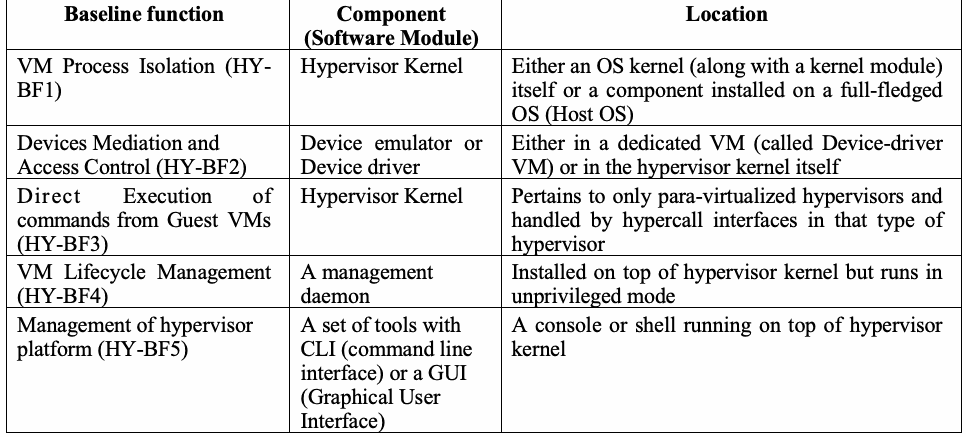
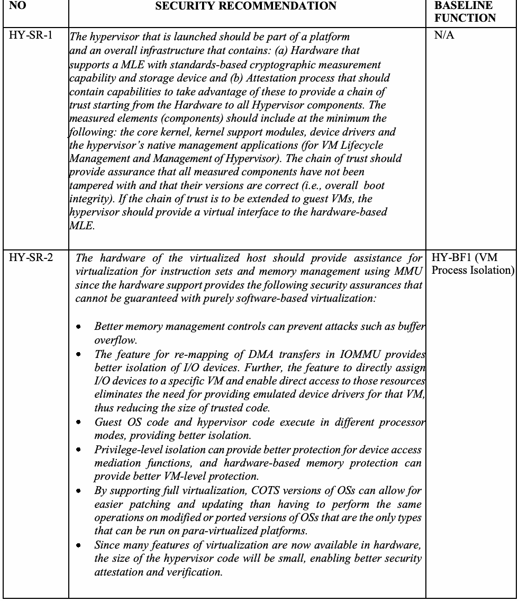
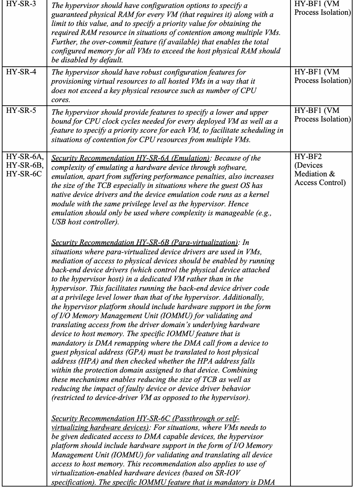
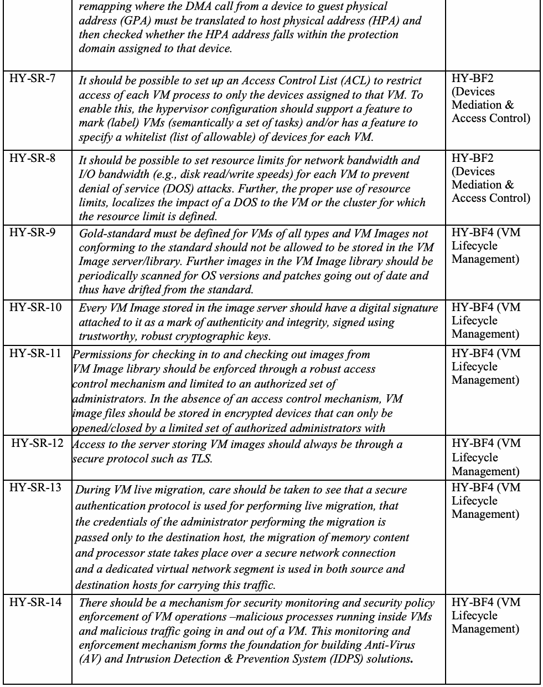
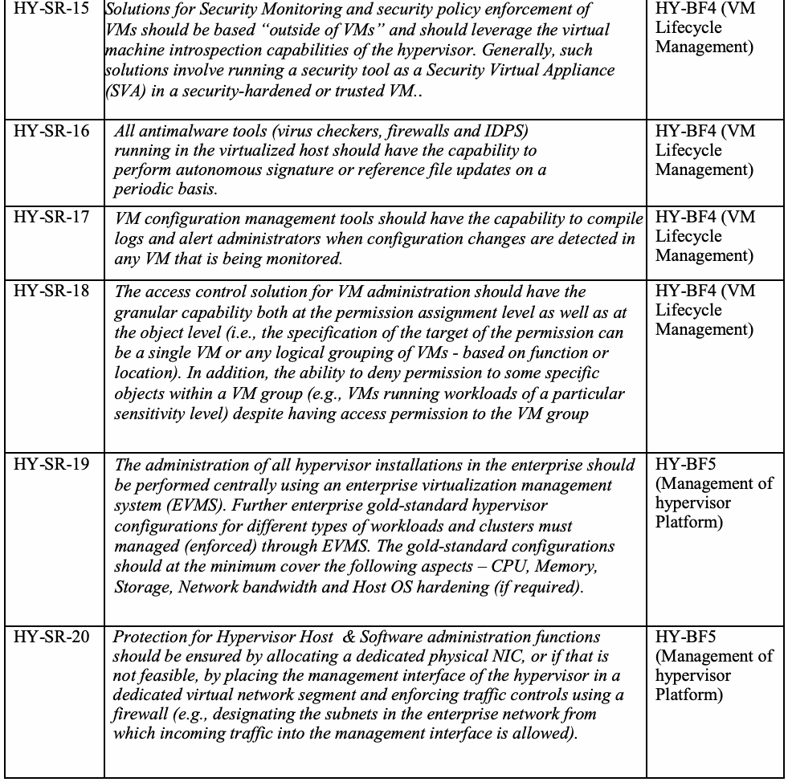

NIST SP 800-125A Rev. 1 日本語訳
英語タイトル : Security Recommendations for Server-based Hypervisor Platforms日本語タイトル : サーバベースのハイパーバイザプラットフォームに関するセキュリティ推奨事項
公開日 : 2018-06-07
原文URL : https://csrc.nist.gov/pubs/sp/800/125/a/r1/final
翻訳編集 : 自動生成（有志による非公式の日本語訳）, 原文取得日 : 2026-09-30, 訳文 : 340 / 340 ブロック
[要約] SP 800-125A Rev. 1 は、サーバー仮想化に用いるハイパーバイザーの基本機能を安全に実行するためのセキュリティ勧告を示します。ハイパーバイザー基本機能（HY-BF）ごとに、VMプロセス分離、デバイスの仲介とアクセス制御、VMライフサイクル管理、プラットフォーム管理などの勧告をまとめます。勧告はハイパーバイザーのアーキテクチャに依存せず、組込みやデスクトップ用途は対象外で、仮想ネットワークの安全な構成は別文書のSP 800-125Bで扱います。
NIST Special Publication 800-125A
NIST特別刊行物 800-125A
Revision 1
改訂第1版
Security Recommendations for Server-based Hypervisor Platforms
サーバーベースのハイパーバイザープラットフォームに関するセキュリティ勧告
Ramaswamy Chandramouli
Ramaswamy Chandramouli
This publication is available free of charge from: https://doi.org/10.6028/NIST.SP.800-125Ar1
本刊行物は次から無料で入手できる: https://doi.org/10.6028/NIST.SP.800-125Ar1
C O M P U T E R S E C U R I T Y
コンピューターセキュリティ
［NIST のロゴ。公的な標章のため、この非公式サイトには掲載していない。原本 PDF を参照。］
NIST Special Publication 800-125A
NIST特別刊行物 800-125A
Revision 1
改訂第1版
Security Recommendations for Server-based Hypervisor Platforms
サーバーベースのハイパーバイザープラットフォームに関するセキュリティ勧告
Ramaswamy Chandramouli Computer Security Division Information Technology Laboratory
Ramaswamy Chandramouli 情報技術研究所 コンピューターセキュリティ部門
This publication is available free of charge from: https://doi.org/10.6028/NIST.SP.800-125Ar1
本刊行物は次から無料で入手できる: https://doi.org/10.6028/NIST.SP.800-125Ar1
June 2018
2018年6月
［米国商務省の紋章。公的な標章のため、この非公式サイトには掲載していない。原本 PDF を参照。］
U.S. Department of Commerce Wilbur L. Ross, Jr., Secretary
米国商務省 Wilbur L. Ross, Jr. 長官
National Institute of Standards and Technology
米国国立標準技術研究所
Walter Copan, NIST Director and Under Secretary of Commerce for Standards and Technology
Walter Copan、NIST所長兼商務省標準技術担当次官
Authority
権限
This publication has been developed by NIST in accordance with its statutory responsibilities under the Federal Information Security Modernization Act (FISMA) of 2014, 44 U.S.C. § 3551 et seq., Public Law (P.L.) 113-283. NIST is responsible for developing information security standards and guidelines, including minimum requirements for federal information systems, but such standards and guidelines shall not apply to national security systems without the express approval of appropriate federal officials exercising policy authority over such systems. This guideline is consistent with the requirements of the Office of Management and Budget (OMB) Circular A-130.
本刊行物は、2014年連邦情報セキュリティ近代化法（FISMA）、44 U.S.C. § 3551 et seq.、公法（P.L.）113-283に基づく法定責任に従い、NISTが策定したものです。NISTは、連邦情報システムの最低要件を含む情報セキュリティ標準およびガイドラインを策定する責任を負うが、そのような標準およびガイドラインは、国家安全保障システムに対する政策権限を行使する適切な連邦当局者の明示的な承認がない限り、当該システムには適用されないものとします。本ガイドラインは、行政管理予算局（OMB）通達A-130の要件に整合しています。
Nothing in this publication should be taken to contradict the standards and guidelines made mandatory and binding on federal agencies by the Secretary of Commerce under statutory authority. Nor should these guidelines be interpreted as altering or superseding the existing authorities of the Secretary of Commerce, Director of the OMB, or any other federal official. This publication may be used by nongovernmental organizations on a voluntary basis and is not subject to copyright in the United States. Attribution would, however, be appreciated by NIST.
本刊行物のいかなる内容も、法定権限に基づき商務長官が連邦機関に対して義務的かつ拘束力のあるものとした標準およびガイドラインに矛盾するものと解釈すべきではありません。また、これらのガイドラインを、商務長官、OMB長官、またはその他の連邦当局者の既存の権限を変更し、またはこれに取って代わるものと解釈すべきでもありません。本刊行物は、非政府組織が任意で使用してよく、米国内では著作権の対象となりません。ただし、出典を明記していただければNISTとして幸いです。
National Institute of Standards and Technology Special Publication 800-125A Revision 1 Natl. Inst. Stand. Technol. Spec. Publ. 800-125A Rev. 1, 38 Pages (June 2018) CODEN: NSPUE2
米国国立標準技術研究所 特別刊行物 800-125A 改訂第1版 Natl. Inst. Stand. Technol. Spec. Publ. 800-125A Rev. 1、38ページ（2018年6月） CODEN: NSPUE2
This publication is available free of charge from: https://doi.org/10.6028/NIST.SP.800-125Ar1
本刊行物は次から無料で入手できる: https://doi.org/10.6028/NIST.SP.800-125Ar1
Certain commercial entities, equipment, or materials may be identified in this document in order to describe an experimental procedure or concept adequately. Such identification is not intended to imply recommendation or endorsement by NIST, nor is it intended to imply that the entities, materials, or equipment are necessarily the best available for the purpose. There may be references in this publication to other publications currently under development by NIST in accordance with its assigned statutory responsibilities. The information in this publication, including concepts and methodologies, may be used by federal agencies even before the completion of such companion publications. Thus, until each publication is completed, current requirements, guidelines, and procedures, where they exist, remain operative. For planning and transition purposes, federal agencies may wish to closely follow the development of these new publications by NIST. Organizations are encouraged to review all draft publications during public comment periods and provide feedback to NIST. Many NIST cybersecurity publications, other than the ones noted above, are available at https://csrc.nist.gov/publications.
実験手順または概念を十分に説明するために、本書において特定の商業主体、機器、または材料を挙げる場合があります。そのような記載は、NISTによる推奨または承認を意味するものではなく、当該主体、材料、または機器がその目的に対して必ずしも入手可能な最良のものであることを意味するものでもありません。本刊行物には、NISTが割り当てられた法定責任に従って現在策定中の他の刊行物への参照が含まれる場合があります。本刊行物に含まれる情報（概念および方法論を含む）は、そのような関連刊行物が完成する前であっても、連邦機関が使用してよい。したがって、各刊行物が完成するまでは、現行の要件、ガイドライン、および手順が存在する場合、それらが引き続き有効です。計画および移行の目的で、連邦機関は、NISTによるこれらの新しい刊行物の策定状況を注視するとよい。組織には、パブリックコメント期間中にすべてのドラフト刊行物をレビューし、NISTにフィードバックを提供することが奨励されます。上記以外のNISTサイバーセキュリティ刊行物の多くは、https://csrc.nist.gov/publications で入手できます。
Comments on this publication may be submitted to: National Institute of Standards and Technology Attn: Computer Security Division, Information Technology Laboratory 100 Bureau Drive (Mail Stop 8930) Gaithersburg, MD 20899-8930 Email: sp800-125A-comments@nist.gov
本刊行物に関するコメントは、次の宛先に提出できる: National Institute of Standards and Technology Attn: Computer Security Division, Information Technology Laboratory 100 Bureau Drive (Mail Stop 8930) Gaithersburg, MD 20899-8930 Email: sp800-125A-comments@nist.gov
All comments are subject to release under the Freedom of Information Act (FOIA).
すべてのコメントは、情報公開法（FOIA）に基づく公開の対象となります。
Reports on Computer Systems Technology
コンピューターシステム技術に関する報告書
The Information Technology Laboratory (ITL) at the National Institute of Standards and Technology (NIST) promotes the U.S. economy and public welfare by providing technical leadership for the Nation’s measurement and standards infrastructure. ITL develops tests, test methods, reference data, proof of concept implementations, and technical analyses to advance the development and productive use of information technology. ITL’s responsibilities include the development of management, administrative, technical, and physical standards and guidelines for the cost-effective security and privacy of other than national security-related information in Federal information systems. The Special Publication 800-series reports on ITL’s research, guidelines, and outreach efforts in information system security, and its collaborative activities with industry, government, and academic organizations.
米国国立標準技術研究所（NIST）の情報技術研究所（ITL）は、国家の計測および標準の基盤に対して技術的リーダーシップを提供することにより、米国の経済および公共の福祉を促進しています。ITLは、情報技術の開発および生産的な利用を推進するため、試験、試験方法、参照データ、概念実証の実装、および技術的分析を開発しています。ITLの責務には、連邦情報システムにおける国家安全保障関連以外の情報について、費用対効果の高いセキュリティおよびプライバシーを確保するための、管理面、事務面、技術面、および物理面の標準およびガイドラインの策定が含まれます。特別刊行物800シリーズは、情報システムセキュリティに関するITLの研究、ガイドライン、およびアウトリーチ活動、ならびに産業界、政府機関、および学術機関との協働活動について報告するものです。
Abstract
概要
The Hypervisor platform is a collection of software modules that provides virtualization of hardware resources (such as CPU, Memory, Network and Storage) and thus enables multiple computing stacks (made of an operating system (OS) and application programs) called Virtual Machines (VMs) to be run on a single physical host. In addition, it may have the functionality to define a network within the single physical host (called virtual network) to enable communication among the VMs resident on that host as well as with physical and virtual machines outside the host. With all this functionality, the hypervisor has the responsibility to mediate access to physical resources, provide run time isolation among resident VMs and enable a virtual network that provides security-preserving communication flow among the VMs and between the VMs and the external network. The architecture of a hypervisor can be classified in different ways. The security recommendations in this document relate to ensuring the secure execution of baseline functions of the hypervisor and are therefore agnostic to the hypervisor architecture. Further, the recommendations are in the context of a hypervisor deployed for server virtualization and not for other use cases such as embedded systems and desktops. Recommendations for secure configuration of a virtual network are dealt with in a separate NIST document (Special Publication 800-125B).
ハイパーバイザープラットフォームは、ハードウェア資源（CPU、メモリ、ネットワーク、ストレージなど）の仮想化を提供するソフトウェアモジュールの集合であり、これにより、仮想マシン（VM）と呼ばれる複数のコンピューティングスタック（オペレーティングシステム（OS）とアプリケーションプログラムで構成される）を単一の物理ホスト上で実行できるようにします。加えて、単一の物理ホスト内にネットワーク（仮想ネットワークと呼ばれる）を定義し、そのホスト上に存在するVM同士の通信、およびホスト外の物理マシンや仮想マシンとの通信を可能にする機能を備える場合があります。これらすべての機能を持つハイパーバイザーは、物理資源へのアクセスを仲介し、ホスト上に存在するVM間の実行時の分離を提供し、VM間およびVMと外部ネットワークとの間でセキュリティを維持した通信フローを提供する仮想ネットワークを実現する責任を負います。ハイパーバイザーのアーキテクチャは、さまざまな方法で分類できます。本文書のセキュリティ勧告は、ハイパーバイザーの基本機能の安全な実行を確保することに関するものであり、したがってハイパーバイザーのアーキテクチャに依存しません。さらに、これらの勧告は、サーバー仮想化のために展開されるハイパーバイザーを前提としたものであり、組込みシステムやデスクトップなどの他のユースケースを対象としたものではありません。仮想ネットワークの安全な構成に関する勧告は、別のNIST文書（特別刊行物800-125B）で扱います。
Keywords
キーワード
Virtualization; Hypervisor; Virtual Machine; Virtual Network; Secure Configuration; Security Monitoring; Guest OS
仮想化; ハイパーバイザー; 仮想マシン; 仮想ネットワーク; 安全な構成; セキュリティ監視; ゲストOS
Acknowledgements
謝辞
The author, Ramaswamy Chandramouli wishes to thank his colleague Tim Grance for his personal input on the content and in helping with the logistics of the publication. Special thanks to Andreas Bartelt from Bosch Center of Competence Security for valuable input regarding technologies for device virtualization. He also thanks Michael Bartock for his valuable review and feedback as a division reader. Last but not the least, he expresses his thanks to Isabel Van Wyk for her detailed editorial review.
著者であるRamaswamy Chandramouliは、内容に関する個人的な意見の提供および刊行に関する事務的調整への協力について、同僚のTim Granceに感謝します。デバイス仮想化の技術に関する貴重な意見を提供してくれたBosch Center of Competence SecurityのAndreas Barteltに特に感謝します。また、部門内査読者として貴重なレビューとフィードバックを提供してくれたMichael Bartockにも感謝します。最後になったが、詳細な編集レビューを行ってくれたIsabel Van Wykにも謝意を表します。
Note to Reviewers
査読者への注記
This revision includes additional technologies for device virtualization such as para-virtualization, passthrough and self-virtualizing hardware devices as well as associated security recommendations. Major content changes in this revision are in: Section 1.1, Section 2.2.2 and Section 5.
本改訂には、準仮想化、パススルー、自己仮想化ハードウェアデバイスといったデバイス仮想化のための追加の技術、および関連するセキュリティ勧告が含まれます。本改訂における主な内容変更は、第1.1節、第2.2.2節、および第5節にあります。
Table of Contents
目次
EXECUTIVE SUMMARY
エグゼクティブサマリー
Server Virtualization is now an established technology for enterprise Information Technology (IT) infrastructure in data centers and cloud services as it provides better utilization of hardware resources, reduces physical space required, and reduces power consumption and administrative overhead. The core software used for server virtualization is called the Hypervisor which directly provides Central Processing Unit (CPU) and memory virtualization. Together with its supporting modules, it enables virtualization of all hardware resources (e.g., CPU, Memory, Network and Storage) and thus enables multiple computing stacks called Virtual Machines (VMs) or Guests, each hosting an Operating System (OS) (Guest OS) and application programs, to be run on a single physical host. This physical host is referred to as Virtualized Host or Hypervisor Host. Since the hypervisor by itself cannot provide all functions needed for server virtualization, it has supporting software modules (e.g., device drivers) for devices (e.g., Network and Storage devices) virtualization in addition to management modules for VM lifecycle operations and hypervisor configuration. The hypervisor together with these supporting modules and the hosting hardware constitute the hypervisor platform. The hypervisor can be installed either directly on the hardware or bare metal (Type 1 Hypervisor) or on top of a full-fledged conventional OS called Host OS (Type 2 Hypervisor).
サーバー仮想化は、ハードウェア資源の利用率を高め、必要な物理スペースを削減し、電力消費と管理負担を軽減するため、データセンターやクラウドサービスにおける企業の情報技術（IT）基盤で、すでに確立された技術となっています。サーバー仮想化に用いる中核ソフトウェアはハイパーバイザーと呼ばれ、中央処理装置（CPU）とメモリの仮想化を直接提供します。ハイパーバイザーは、その支援モジュールとともに、すべてのハードウェア資源（CPU、メモリ、ネットワーク、ストレージなど）の仮想化を可能にし、それによって、仮想マシン（VM）またはゲストと呼ばれる複数のコンピューティングスタックを単一の物理ホスト上で実行できるようにします。各スタックはオペレーティングシステム（OS）（ゲストOS）とアプリケーションプログラムをホストします。この物理ホストは仮想化ホストまたはハイパーバイザーホストと呼ばれます。ハイパーバイザー単体ではサーバー仮想化に必要なすべての機能を提供できないため、VMのライフサイクル操作やハイパーバイザー構成のための管理モジュールに加え、デバイス（ネットワークデバイスやストレージデバイスなど）の仮想化のための支援ソフトウェアモジュール（デバイスドライバーなど）を備えます。ハイパーバイザーは、これらの支援モジュールおよびホストとなるハードウェアと合わせて、ハイパーバイザープラットフォームを構成します。ハイパーバイザーは、ハードウェアに直接、すなわちベアメタル上にインストールする（タイプ1ハイパーバイザー）ことも、ホストOSと呼ばれる本格的な従来型OSの上にインストールする（タイプ2ハイパーバイザー）こともできます。
At first glance, it might appear that all activities related to secure management of a hypervisor and its hardware host (collectively called Hypervisor Platform) should consist of just the established state of the art practices for any server class software and its hosting environment. However, closer examination reveals that functions for supporting hardware virtualization that a hypervisor provides have extensive security ramifications and therefore require a focused set of security recommendations based on an analysis of threats to the secure execution of these functions.
一見すると、ハイパーバイザーとそのハードウェアホスト（総称してハイパーバイザープラットフォームと呼ぶ）の安全な管理に関わるすべての活動は、あらゆるサーバークラスのソフトウェアおよびそのホスティング環境について確立されている最新の慣行だけで構成されるべきであるように見えるかもしれません。しかし、詳しく調べると、ハイパーバイザーが提供するハードウェア仮想化を支援する機能には広範なセキュリティ上の影響があり、したがって、これらの機能の安全な実行に対する脅威の分析に基づく、焦点を絞った一連のセキュリティ勧告が必要であることが分かります。
Since there are multiple ways by which an architecture of a hypervisor can be classified, the approach taken in this document is to identify the baseline functions that a hypervisor performs, the tasks involved in each baseline function, the potential threats to the secure execution of the task, and the countermeasures that can provide assurance against exploitation of these threats in the form of security recommendations.
ハイパーバイザーのアーキテクチャを分類する方法は複数あるため、本書では、ハイパーバイザーが実行する基本機能、各基本機能に含まれるタスク、そのタスクの安全な実行に対する潜在的脅威、およびそれらの脅威の悪用に対する保証を提供できる対策を特定し、対策をセキュリティ勧告の形で示すというアプローチを採用しています。
The following five are identified as baseline functions of a hypervisor platform:
ハイパーバイザープラットフォームの基本機能として、次の5つが特定されています。
•VM Process Isolation
•VMプロセスの分離
•Devices Mediation and Access Control
•デバイスの仲介とアクセス制御
•Direct Execution of commands from Guest VMs
•ゲストVMからのコマンドの直接実行
•VM Lifecycle Management
•VMライフサイクル管理
•Management of hypervisor platform
•ハイパーバイザープラットフォームの管理
Apart from providing security recommendations for ensuring the secure execution of the baseline functions listed above, a recommendation for ensuring the overall integrity of all components of a hypervisor platform is also provided. The recommendations cover both Type 1 and Type 2 hypervisors.
上記の基本機能の安全な実行を確保するためのセキュリティ勧告に加え、ハイパーバイザープラットフォームのすべてのコンポーネントの全体的な完全性を確保するための勧告も示します。これらの勧告はタイプ1とタイプ2の両方のハイパーバイザーを対象とします。
Secure execution of routine administrative functions for the physical host where the hypervisor is installed is not covered in this document. The protection requirements for countering physical access threats, as well as those for Guest OS and applications running on VMs and associated security recommendations, are also beyond the scope of this document. Further, the security recommendations pertain to hypervisors deployed for server virtualization and do not cover other use cases such as the use of hypervisor for desktops and embedded systems.
ハイパーバイザーがインストールされている物理ホストに対する定型的な管理機能の安全な実行は、本書では扱いません。物理アクセスの脅威に対抗するための保護要件、ならびにVM上で動作するゲストOSおよびアプリケーションに関する保護要件とそれに関連するセキュリティ勧告も、本書の適用範囲外です。さらに、セキュリティ勧告はサーバー仮想化のために展開されるハイパーバイザーに関するものであり、デスクトップや組込みシステムでのハイパーバイザーの利用といった他のユースケースは対象としません。
1. INTRODUCTION, SCOPE, AND TARGET AUDIENCE
1. はじめに、適用範囲、および対象読者
The Hypervisor is the core software that provides server virtualization. Along with its supporting modules, it enables virtualization of all hardware resources (e.g., CPU, Memory, Network, and Storage) and thus enables multiple computing stacks (basically made of an OS and application programs) to be run on a single physical host. Such a physical host is called a Virtualized Host (also referred to as a Hypervisor Host in this document), and the individual computing stacks are encapsulated in an artifact called Virtual Machines (VMs). To be an independent executable entity, the definition of a VM should include resources (e.g., CPU, Memory, etc.) allocated to it. The VMs are also called “Guests,” and the operating system (OS) running inside each of them is called “Guest OS.” The resources associated with a VM are virtual resources as opposed to physical resources associated with a physical host. The hypervisor together with these supporting modules and the hosting hardware constitute the hypervisor platform.
ハイパーバイザーは、サーバー仮想化を提供する中核ソフトウェアです。ハイパーバイザーは、その支援モジュールとともに、すべてのハードウェア資源（CPU、メモリ、ネットワーク、ストレージなど）の仮想化を可能にし、それによって、複数のコンピューティングスタック（基本的にはOSとアプリケーションプログラムで構成される）を単一の物理ホスト上で実行できるようにします。このような物理ホストは仮想化ホスト（本書ではハイパーバイザーホストとも呼ぶ）と呼ばれ、個々のコンピューティングスタックは仮想マシン（VM）と呼ばれるアーティファクトにカプセル化されます。独立した実行可能な実体であるためには、VMの定義に、そのVMに割り当てられた資源（CPU、メモリなど）が含まれるべきです。VMは「ゲスト」とも呼ばれ、それぞれの内部で動作するオペレーティングシステム（OS）は「ゲストOS」と呼ばれます。VMに関連付けられる資源は、物理ホストに関連付けられる物理資源とは対照的に、仮想資源です。ハイパーバイザーは、これらの支援モジュールおよびホストとなるハードウェアと合わせて、ハイパーバイザープラットフォームを構成します。
The primary function of the hypervisor is to enforce guest OS isolation as well as controlled resource sharing among guest VMs. Thus, it plays many of the roles a conventional OS does on a non-virtualized host (server). Just as a conventional OS provides isolation between the various applications (or processes) running on a server, the hypervisor provides isolation between one or more VMs running on it. Also, similar to an OS, the hypervisor mediates access to physical resources (devices) across multiple VMs. While access to CPU and memory (to ensure process isolation) are handled directly by the hypervisor (through instruction set (CPU) virtualization and memory virtualization respectively with or without assistance from hardware), it handles the mediation of access to devices (devices virtualization) by calling on software modules running either in the kernel or in dedicated VMs called Device-driver VMs. The hypervisor can be installed either directly on the hardware or bare metal (Type 1 Hypervisor) or on top of a full-fledged conventional OS called Host OS (Type 2 Hypervisor).
ハイパーバイザーの主な機能は、ゲストOSの分離、およびゲストVM間の制御された資源共有を強制することです。したがって、ハイパーバイザーは、従来型OSが非仮想化ホスト（サーバー）上で担う役割の多くを果たします。従来型OSがサーバー上で動作する各種アプリケーション（またはプロセス）の間の分離を提供するのと同様に、ハイパーバイザーはその上で動作する1つ以上のVMの間の分離を提供します。また、OSと同様に、ハイパーバイザーは複数のVMにわたって物理資源（デバイス）へのアクセスを仲介します。（プロセス分離を確保するための）CPUとメモリへのアクセスは、ハードウェアの支援の有無にかかわらず、それぞれ命令セット（CPU）仮想化とメモリ仮想化を通じてハイパーバイザーが直接処理するが、デバイスへのアクセスの仲介（デバイス仮想化）については、カーネル内またはデバイスドライバーVMと呼ばれる専用VM内で動作するソフトウェアモジュールを呼び出すことで処理します。ハイパーバイザーは、ハードウェアに直接、すなわちベアメタル上にインストールする（タイプ1ハイパーバイザー）ことも、ホストOSと呼ばれる本格的な従来型OSの上にインストールする（タイプ2ハイパーバイザー）こともできます。
At first glance, it might appear that all activities related to the secure management of a hypervisor and its hardware host (collectively called Hypervisor Platform) should consist of just the established state of the art practices for any server class software and its hosting environment. However, closer examination reveals that the functions for supporting hardware virtualization that a hypervisor provides have extensive security ramifications and therefore require a focused set of security recommendations based on an analysis of threats to the integrity of these functions. In this document, these functions are called hypervisor baseline functions.
一見すると、ハイパーバイザーとそのハードウェアホスト（総称してハイパーバイザープラットフォームと呼ぶ）の安全な管理に関わるすべての活動は、あらゆるサーバークラスのソフトウェアおよびそのホスティング環境について確立された最新の慣行だけで構成されるべきであるように見えるかもしれません。しかし、詳しく調べると、ハイパーバイザーが提供するハードウェア仮想化を支援する機能には広範なセキュリティ上の影響があり、したがって、これらの機能の完全性に対する脅威の分析に基づく、焦点を絞った一連のセキュリティ勧告が必要であることが分かります。本書では、これらの機能をハイパーバイザー基本機能と呼びます。
The hypervisor baseline functions consist of:
ハイパーバイザー基本機能は、次のもので構成される:
•VM Process Isolation
•VMプロセス分離
•Devices Mediation and Access Control
•デバイスの仲介とアクセス制御
•Direct Execution of commands from Guest VMs
•ゲストVMからのコマンドの直接実行
•VM Lifecycle Management
•VMライフサイクル管理
•Management of hypervisor platform
•ハイパーバイザープラットフォームの管理
A brief description of the above functions is given in section 1.1 below.
上記の各機能の簡単な説明を、以下の第1.1節に示します。
1.1 Hypervisor Baseline Functions (HY-BF)
1.1 ハイパーバイザー基本機能（HY-BF）
While the basic function of a hypervisor is to virtualize hardware (a physical host) to enable the operation of multiple virtual hosts (popularly known as VMs), commercial hypervisor offerings come with differing feature sets. The modules that provide the same set of features are given different names in different product offerings. Hence, for accomplishing the goals of this document, it is necessary to identify a set of baseline features of a hypervisor that covers all functions for supporting hardware virtualization. In some instances, the module that just presents a set of virtualized resources to the VMs is called the Virtual Machine Manager (VMM). When VMMs are combined with the modules that provide OS-level services, such as the scheduling of VMs in the CPU, they are called the hypervisor. These hypervisor baseline features or functions are:
ハイパーバイザーの基本的な機能は、複数の仮想ホスト（一般にVMと呼ばれる）の動作を可能にするためにハードウェア（物理ホスト）を仮想化することであるが、市販のハイパーバイザー製品は、それぞれ異なる機能セットを備えています。同じ機能セットを提供するモジュールにも、製品によって異なる名称が付けられています。したがって、本書の目的を達成するには、ハードウェア仮想化を支援するすべての機能を網羅する、ハイパーバイザーの基本的な特徴のセットを特定する必要があります。場合によっては、仮想化された資源のセットをVMに提示するだけのモジュールを仮想マシンマネージャー（VMM）と呼びます。VMMを、CPUにおけるVMのスケジューリングなどのOSレベルのサービスを提供するモジュールと組み合わせたものを、ハイパーバイザーと呼びます。これらのハイパーバイザーの基本的な特徴または機能は、次のとおりである:
•HY-BF1: VM Process Isolation – Provides scheduling of VMs for execution, Management of the application processes running in VMs such as CPU and Memory Management, and context switching between various processor states during the running of applications in VMs. In order to ensure VM process isolation, memory access from Direct Memory Access (DMA) capable devices needs to be under hypervisor control as well (e.g., via Input Output Memory Management Unit (IOMMU)). However, this function is considered under HY-BF2 since it pertains to devices mediation.
•HY-BF1: VMプロセス分離 — VMの実行スケジューリング、VM内で動作するアプリケーションプロセスの管理（CPUおよびメモリ管理など）、ならびにVM内でのアプリケーション実行中における各種プロセッサ状態間のコンテキスト切替を提供します。VMプロセスの分離を確保するには、ダイレクトメモリアクセス（DMA）が可能なデバイスからのメモリアクセスも、ハイパーバイザーの制御下に置く必要がある（例: 入出力メモリ管理ユニット（IOMMU）を介して）。ただし、この機能はデバイスの仲介に関係するため、HY-BF2で扱います。
•HY-BF2: Devices Mediation and Access Control – Makes devices available to VMs (e.g., via emulation, para-virtualization, passthrough or self-virtualizing hardware devices) and controlling which VMs are allowed to access which devices (e.g., Network Interface Card (NIC), storage device such as IDE drive, etc.).
•HY-BF2: デバイスの仲介とアクセス制御 — デバイスをVMから利用可能にし（例: エミュレーション、準仮想化、パススルー、または自己仮想化ハードウェアデバイスを介して）、どのVMがどのデバイス（例: ネットワークインターフェースカード（NIC）、IDEドライブなどのストレージデバイスなど）にアクセスできるかを制御します。
•HY-BF3: Direct Execution of commands from Guest VMs – Certain commands from Guest OSs are executed directly by the hypervisor instead of being triggered through interrupts and context switching. This function applies to hypervisors that have implemented para-virtualization instead of full virtualization
•HY-BF3: ゲストVMからのコマンドの直接実行 — ゲストOSからの特定のコマンドは、割込みやコンテキスト切替を通じて起動されるのではなく、ハイパーバイザーによって直接実行されます。この機能は、完全仮想化ではなく準仮想化を実装したハイパーバイザーに適用される
•HY-BF4: VM Lifecycle Management – All functions including creation and management of VM images, control of VM states (Start, Pause, Stop), VM migration, making snapshots, VM monitoring, and policy enforcement
•HY-BF4: VMライフサイクル管理 — VMイメージの作成と管理、VM状態の制御（起動、一時停止、停止）、VMの移行、スナップショットの作成、VMの監視、およびポリシーの施行を含むすべての機能
•HY-BF5: Management of hypervisor platform – Defining artifacts and setting values for various configuration parameters in hypervisor software modules including those for configuration of a Virtual Network inside the hypervisor and updates and patching to those modules.
•HY-BF5: ハイパーバイザープラットフォームの管理 — ハイパーバイザーソフトウェアモジュールにおけるアーティファクトの定義および各種構成パラメーターの値の設定（ハイパーバイザー内の仮想ネットワークの構成のためのものを含む）、ならびにそれらのモジュールの更新およびパッチ適用。
The brief description of the five baseline functions is sufficient to guide discussion in the rest of the document. Detailed descriptions of the functions are provided in Appendix A.
5つの基本機能についてのこの簡単な説明は、本書の以降の議論を導くのに十分です。各機能の詳細な説明は付録Aに示します。
The above functions are carried out by different hypervisor components or software modules. There are some minor differences among hypervisor products in the way functions are distributed. The mapping of these functions to hypervisor components and the location of these components in overall hypervisor architecture are given in Table 1 below:
上記の機能は、異なるハイパーバイザーコンポーネントまたはソフトウェアモジュールによって実行されます。機能の配分の仕方には、ハイパーバイザー製品間で若干の違いがあります。これらの機能とハイパーバイザーコンポーネントとの対応、およびハイパーバイザー全体のアーキテクチャにおけるこれらのコンポーネントの位置を、以下の表1に示す:
Table 1: Hypervisor Platform Baseline functions
表1: ハイパーバイザープラットフォームの基本機能
| Baseline function | Component (Software Module) | Location |
| VM Process Isolation (HY-BF1) | Hypervisor Kernel | Either an OS kernel (along with a kernel module) itself or a component installed on a full-fledged OS (Host OS) |
| Devices Mediation and Access Control (HY-BF2) | Device emulator or Device driver | Either in a dedicated VM (called Device-driver VM) or in the hypervisor kernel itself |
| Direct Execution of commands from Guest VMs (HY-BF3) | Hypervisor Kernel | Pertains to only para-virtualized hypervisors and handled by hypercall interfaces in that type of hypervisor |
| VM Lifecycle Management (HY-BF4) | A management daemon | Installed on top of hypervisor kernel but runs in unprivileged mode |
| Management of hypervisor platform (HY-BF5) | A set of tools with CLI (command line interface) or a GUI (Graphical User Interface) | A console or shell running on top of hypervisor kernel |
原本PDFの抜粋画像

| 基本機能 | コンポーネント（ソフトウェアモジュール） | 配置場所 |
| VMプロセス分離（HY-BF1） | ハイパーバイザーカーネル | （カーネルモジュールを伴う）OSカーネル自体、または本格的なOS（ホストOS）上にインストールされたコンポーネントのいずれか |
| デバイスの仲介とアクセス制御（HY-BF2） | デバイスエミュレーターまたはデバイスドライバー | 専用VM（デバイスドライバーVMと呼ばれる）内、またはハイパーバイザーカーネル自体の中のいずれか |
| ゲストVMからのコマンドの直接実行（HY-BF3） | ハイパーバイザーカーネル | 準仮想化ハイパーバイザーのみに関係し、その種のハイパーバイザーではハイパーコールインターフェースによって処理される |
| VMライフサイクル管理（HY-BF4） | 管理デーモン | ハイパーバイザーカーネルの上にインストールされるが、非特権モードで動作する |
| ハイパーバイザープラットフォームの管理（HY-BF5） | CLI（コマンドラインインターフェース）またはGUI（グラフィカルユーザーインターフェース）を備えたツール群 | ハイパーバイザーカーネルの上で動作するコンソールまたはシェル |
In general, functions HY-BF1 and HY-BF3 are offered by modules running in a kernel collectively called “Hypervisor” while HY-BF2 is enabled by a software module that runs either in a dedicated VM (called Device-driver VM) or in the hypervisor kernel itself. The functions HY-BF4 and HY-BF5 are performed by a module called management or service console or through a kernel module. Just like the module that performs the HY-BF2 function, the console is a software layer that is generally not built into the hypervisor kernel but runs on top of it as a privileged VM and could be built either with a full-fledged OS installed inside it or with an ultra-light OS used to present an Application Programming Interface (API) (shell and network access) with utility functions that facilitate performing only the hypervisor-specific configuration and administrative tasks.
一般に、機能HY-BF1およびHY-BF3は、「ハイパーバイザー」と総称される、カーネル内で動作するモジュール群によって提供され、一方HY-BF2は、専用VM（デバイスドライバーVMと呼ばれる）内またはハイパーバイザーカーネル自体の中で動作するソフトウェアモジュールによって実現されます。機能HY-BF4およびHY-BF5は、管理コンソールまたはサービスコンソールと呼ばれるモジュールによって、あるいはカーネルモジュールを通じて実行されます。HY-BF2機能を実行するモジュールと同様に、コンソールは、一般にハイパーバイザーカーネルには組み込まれず、その上で特権VMとして動作するソフトウェア層であり、本格的なOSを内部にインストールして構築することも、ハイパーバイザー固有の構成および管理タスクのみの実行を容易にするユーティリティ機能を備えたアプリケーションプログラミングインターフェース（API）（シェルおよびネットワークアクセス）を提示するために用いられる超軽量OSで構築することもできます。
1.2 Scope of this document
1.2 本書の適用範囲
The architecture of a hypervisor deployed for server virtualization can be classified in different ways: (a) Based on the entity over which the hypervisor installs – Type 1 Hypervisor or Type 2 Hypervisor (already described) (b) Based on the type of virtualization - Full Virtualization – The hypervisor will expose the interface of a hardware device that is available in the real world to the VM and for which drivers are available for guest OS, and it will completely emulate the behavior of that device. Emulation allows the programs running in VMs to use the VM OS drivers that were designed to interact with the emulated device without installing any special driver or tool specified by the hypervisor vendor. - Para Virtualization - The hypervisor exposes a device that does not exists in the real world, which is just software only, and presents a lightweight interface. However, this scenario calls for having special drivers in the VM, sometimes requiring modification to the guest OS. This approach is intended to increase the performance level of the applications running in the VM, compared to the emulation approach adopted in full virtualization.
サーバー仮想化のために導入されるハイパーバイザーのアーキテクチャは、さまざまな方法で分類できる: (a) ハイパーバイザーがインストールされる対象に基づく分類 – タイプ1ハイパーバイザーまたはタイプ2ハイパーバイザー（説明済み） (b) 仮想化の種類に基づく分類 - 完全仮想化 – ハイパーバイザーは、実世界で入手可能であり、かつゲストOS用のドライバーが利用可能なハードウェアデバイスのインターフェースをVMに公開し、そのデバイスの動作を完全にエミュレートします。エミュレーションにより、VM内で動作するプログラムは、ハイパーバイザーベンダーが指定する特別なドライバーやツールを一切インストールすることなく、エミュレートされたデバイスと対話するように設計されたVM OSのドライバーを使用できます。 - 準仮想化 - ハイパーバイザーは、実世界には存在しない、ソフトウェアのみのデバイスを公開し、軽量なインターフェースを提示します。ただし、この方式ではVM内に特別なドライバーが必要であり、ゲストOSの変更が必要になることもあります。この方式は、完全仮想化で採用されるエミュレーション方式と比べて、VM内で動作するアプリケーションの性能水準を高めることを意図しています。
The trust model assumed for the hypervisor platform described in this document is as follows:
本書で説明するハイパーバイザープラットフォームについて想定する信頼モデルは、次のとおりである:
•All components in a VM are untrusted including the guest OS and its associated utilities (e.g., guest device drivers) that run in the kernel space and all applications that run in the user space
•VM内のすべてのコンポーネントは信頼されません。これには、カーネル空間で動作するゲストOSおよびその関連ユーティリティ（例: ゲストデバイスドライバー）、ならびにユーザー空間で動作するすべてのアプリケーションが含まれる
•The device drivers that are implemented within the hypervisor platform are untrusted unless they carry a security certification
•ハイパーバイザープラットフォーム内に実装されているデバイスドライバーは、セキュリティ認証を取得していない限り、信頼されない
•The hypervisor kernel component that provides isolation between VMs is trusted
•VM間の分離を提供するハイパーバイザーカーネルコンポーネントは信頼される
•The host OS is trusted for Type 2 hypervisors
•Type 2ハイパーバイザーの場合、ホストOSは信頼される
•The hardware of the hypervisor host is trusted
•ハイパーバイザーホストのハードウェアは信頼される
With the background information on hypervisor architecture and the assumed trust model, the scope of security recommendations for the five baseline functions (HY-BF1 through HY-BF5) covers the following:
ハイパーバイザーアーキテクチャおよび想定する信頼モデルに関する背景情報を踏まえると、5つの基本機能（HY-BF1からHY-BF5まで）に関するセキュリティ勧告の範囲は、以下を対象とする:
•All tasks that relate to functions HY-BF1, HY-BF2, and HY-BF4
•HY-BF1、HY-BF2、およびHY-BF4の各機能に関連するすべてのタスク
•HY-BF3, which relates to the handling of hypercalls in para-virtualized hypervisors, is a trusted function of the hypervisor and not included in the security recommendations
•準仮想化ハイパーバイザーにおけるハイパーコールの処理に関係するHY-BF3は、ハイパーバイザーの信頼された機能であり、セキュリティ勧告には含まれない
•All tasks under HY-BF5 are included, except for those related to the definition and configuration of virtual network (secure configuration of virtual networks is covered under a separate NIST document, SP 800-125B)
•HY-BF5に属するすべてのタスクが含まれます。ただし、仮想ネットワークの定義および構成に関係するものを除く（仮想ネットワークの安全な構成は、別のNIST文書であるSP 800-125Bで扱われる）
Recommendations to ensure overall platform integrity are also provided.
プラットフォーム全体の完全性を確保するための勧告も示します。
The security recommendations do not cover the following:
セキュリティ勧告は、以下を対象としない:
•Hypervisor host user account management
•ハイパーバイザーホストのユーザーアカウント管理
•Hypervisor host authentication and access control
•ハイパーバイザーホストの認証およびアクセス制御
•Routine administration of Host OS (e.g., keeping patches current)
•ホストOSの日常的な管理（例: パッチを最新の状態に保つこと）
•Routine administration of Guest OS
•ゲストOSの日常的な管理
•Security of Guest OSs running on VMs
•VM上で動作するゲストOSのセキュリティ
•Security of Applications/Services running on VMs
•VM上で動作するアプリケーション／サービスのセキュリティ
1.3 Target Audience
1.3 対象読者
The target audience for the security recommendations in this document is the following:
本書のセキュリティ勧告の対象読者は、次のとおりです。
•The Chief Security Officer (CSO) or the Chief Technology Officer (CTO) of an Enterprise IT department in a private enterprise or government agency who wants to develop a virtualization infrastructure to host various Line of Business (LOB) application systems on Virtual Machines (VM)
•さまざまな基幹業務（LOB）アプリケーションシステムを仮想マシン（VM）上でホストする仮想化基盤の構築を望む、民間企業または政府機関のエンタープライズIT部門の最高セキュリティ責任者（CSO）または最高技術責任者（CTO）
•Managers of data centers who want to offer virtualization infrastructure for hosting secure cloud services, such as Infrastructure as a Service (IaaS), for cloud service customers.
•クラウドサービス顧客向けに、サービスとしてのインフラストラクチャ（IaaS）などのセキュアなクラウドサービスをホストする仮想化基盤の提供を希望するデータセンター管理者。
1.4 Relationship to other NIST Guidance Documents
1.4 他のNISTガイダンス文書との関係
In terms of technology area, the NIST Guidance document that is related to this document is NIST Special Publication (SP) 800-125, Guide to Security for Full Virtualization Technologies. Consistent with the state of technology adoption at that time (SP 800-125 was published in January 2011), SP 800-125 provided higher-level security recommendations for use of components in two applications of virtualization paradigm: Server Virtualization and Desktop Virtualization. Since then, Server Virtualization has found widespread adoption in IT data centers both for hosting in-house or on-premises (enterprise) applications as well as for hosting applications and providing computing units for cloud services.
技術分野の観点で本書に関連するNISTガイダンス文書は、NIST特別刊行物（SP）800-125「完全仮想化技術のセキュリティガイド」です。当時の技術導入状況に合わせて（SP 800-125は2011年1月に発行された）、SP 800-125は、仮想化パラダイムの2つの適用形態、すなわちサーバー仮想化とデスクトップ仮想化におけるコンポーネントの利用について、より高水準のセキュリティ勧告を示しました。それ以降、サーバー仮想化は、社内またはオンプレミスの（エンタープライズ）アプリケーションをホストする用途と、クラウドサービス向けにアプリケーションをホストしコンピューティングユニットを提供する用途の両方で、ITデータセンターに広く採用されるようになりました。
Accompanying this technology adoption trend is the increase in feature sets of hypervisors, as well as market availability of the set of tools used for configuration and administration of the virtualized infrastructure spawned by the hypervisor. The objective of this document is to focus on the development of a set of security recommendations for deployment of the hypervisor (with all of its constituent modules) including the steps involved in the creation and provisioning of VMs. The distinguishing features of the set of security recommendations provided in this document in the context of similar NIST Guidance documents are given below:
この技術導入の傾向に伴い、ハイパーバイザーの機能セットが拡大するとともに、ハイパーバイザーによって生成される仮想化基盤の構成と管理に使用するツールセットも市場で入手可能になっています。本書の目的は、VMの作成とプロビジョニングに関わる手順を含め、ハイパーバイザー（そのすべての構成モジュールを含む）の展開に関するセキュリティ勧告セットの策定に焦点を当てることです。同様のNISTガイダンス文書との関係で見た、本書が示すセキュリティ勧告セットの特徴を以下に示します。
•A focused set of security recommendations that are architecture agnostic for the deployment of hypervisors is provided.
•ハイパーバイザーの展開に関して、アーキテクチャに依存しない、焦点を絞ったセキュリティ勧告セットを示します。
•Since real world deployment includes provisioning of VMs, all VM life-cycle operations, from creation and management of VM images to their administration using granular privileges, is covered.
•実際の展開にはVMのプロビジョニングが含まれるため、VMイメージの作成と管理から、きめ細かな権限を用いたVMの管理まで、VMのすべてのライフサイクル操作を対象とします。
•Recognizing that the hypervisor is a purpose-built Operating System (OS) kernel and t h a t the security of a server OS depends upon its weakest link regardless of the distribution (e.g., driver software), security recommendations relating to these components have been provided as well.
•ハイパーバイザーは専用に構築されたオペレーティングシステム（OS）カーネルであり、サーバーOSのセキュリティは、ディストリビューションに関係なくその最も弱いリンク（ドライバーソフトウェアなど）に依存することを踏まえ、これらのコンポーネントに関するセキュリティ勧告も示しています。
•Recognizing that the hypervisor performs certain privileged operations without interference from any other entity in the virtualized host and that leveraging hardware support for these operations will make a significant difference to the overall security of hypervisor deployment, the security recommendations also improve performance when virtualization-specific functions (e.g., memory tables for multiple VMs) are offloaded (leveraged) to the processor instead of through software functions.
•ハイパーバイザーが仮想化ホスト内の他のいかなるエンティティからも干渉されずに特定の特権操作を実行すること、およびこれらの操作にハードウェア支援を活用することがハイパーバイザー展開の全体的なセキュリティに大きな違いをもたらすことを踏まえ、セキュリティ勧告は、仮想化固有の機能（複数VM向けのメモリテーブルなど）をソフトウェア機能によってではなくプロセッサにオフロード（活用）する場合に、性能も向上させる。
•All security recommendations are intended to provide assurance against exploitation of threats to tasks involved in the hypervisor’s baseline functions.
•すべてのセキュリティ勧告は、ハイパーバイザーの基本機能に含まれるタスクに対する脅威の悪用に対して保証を提供することを目的とします。
2. APPROACH FOR DEVELOPING SECURITY RECOMMENDATIONS
2. セキュリティ勧告の策定アプローチ
Developing security recommendations for the deployment and use of a complex software such as the hypervisor requires knowledge of potential threats that, when exploited, would affect the three basic security properties of confidentiality, integrity, and availability of hypervisor functions. The approach adopted for developing security recommendations for deployment of hypervisor in this document is as follows:
ハイパーバイザーのような複雑なソフトウェアの展開と使用に関するセキュリティ勧告を策定するには、悪用された場合にハイパーバイザー機能の機密性、完全性、および可用性という3つの基本的なセキュリティ特性に影響を及ぼすことになる潜在的脅威についての知識が必要です。本書においてハイパーバイザーの展開に関するセキュリティ勧告を策定するために採用するアプローチは、次のとおりです。
•Ensure the integrity of all components of the hypervisor platform, starting from the host Basic Input Output System (BIOS) to all software modules of the hypervisor. This is accomplished through a secure boot process outlined as recommendation HY-SR1 in section 3.
•ホストの基本入出力システム（BIOS）からハイパーバイザーのすべてのソフトウェアモジュールに至るまで、ハイパーバイザープラットフォームのすべてのコンポーネントの完全性を確保します。これは、第3節で勧告HY-SR1として概説するセキュアブートプロセスを通じて実現します。
•Identify the threat sources in a typical hypervisor platform. The nature of threats from rogue or compromised VMs are briefly discussed (Section 2.1).
•一般的なハイパーバイザープラットフォームにおける脅威源を特定します。不正なVMまたは侵害されたVMからの脅威の性質を簡潔に論じる（第2.1節）。
•For each of the five baseline functions HY-BF1 through HY-BF5 (with the exception of HY-BF3, the execution of privileged operations by the hypervisor), identify the different tasks under each function, and for each of the tasks, identify the potential threats to the secure execution of the task. The counter measures that will provide assurance against exploitation of these threats form the basis for security recommendations (Section 2.2).
•5つの基本機能HY-BF1からHY-BF5のそれぞれ（ハイパーバイザーによる特権操作の実行であるHY-BF3を除く）について、各機能に含まれるさまざまなタスクを特定し、各タスクについて、そのタスクの安全な実行に対する潜在的脅威を特定します。これらの脅威の悪用に対する保証を提供する対策が、セキュリティ勧告の基礎となる（第2.2節）。
It must be noted that in some cases of large open-source and commercial software environments (e.g., Database Management System (DBMS) platform), the approach adopted for secure deployment and usage is to study the reports published in the public vulnerability databases for various product offerings, seek out available patches through online public forums or the software vendor, and look for recommended secure configuration settings (also via online public forums or the software vendor websites). We do not adopt this approach in this document since the intended purpose is not to provide security recommendations for a specific open source or commercial hypervisor product offering but rather for the entire product class based on its baseline functions.
大規模なオープンソースおよび商用ソフトウェア環境（データベース管理システム（DBMS）プラットフォームなど）の一部の事例では、安全な展開と使用のために採用されるアプローチが、さまざまな製品について公開脆弱性データベースに掲載された報告を調査し、オンラインの公開フォーラムまたはソフトウェアベンダーを通じて利用可能なパッチを探し、推奨されるセキュアな構成設定を（これもオンラインの公開フォーラムまたはソフトウェアベンダーのウェブサイトを通じて）探すというものであることに留意しなければなりません。本書ではこのアプローチを採用しません。意図する目的が、特定のオープンソースまたは商用のハイパーバイザー製品についてセキュリティ勧告を示すことではなく、基本機能に基づいて製品クラス全体についてセキュリティ勧告を示すことだからです。
2.1 Hypervisor Platform Threat Sources
2.1 ハイパーバイザープラットフォームへの脅威源
The hypervisor software is resident on a physical host that is connected to the enterprise network. It has the capability to be remotely administered. At the same time, it supports multiple virtual hosts (virtual machines or VMs) that are generally nodes of a software-defined virtual network inside that physical host. In some cases, they could be nodes of an isolated network or sharing the host network. Based on this scenario, one can identify three basic sources of threats to a hypervisor platform, each of which is identified by using the symbol HY-TS#:
ハイパーバイザーソフトウェアは、企業ネットワークに接続された物理ホスト上に常駐します。ハイパーバイザーソフトウェアはリモートから管理できる機能を備えています。同時に、複数の仮想ホスト（仮想マシン、すなわちVM）をサポートし、これらは一般に当該物理ホスト内のソフトウェア定義の仮想ネットワークのノードです。場合によっては、これらは分離されたネットワークのノードであることも、ホストネットワークを共有していることもあり得ます。このシナリオに基づき、ハイパーバイザープラットフォームに対する3つの基本的な脅威源を特定でき、それぞれを記号HY-TS#を用いて識別します。
•HY-TS1: Threats from and through the enterprise network in which the hypervisor host (virtualized host) resides
•HY-TS1: ハイパーバイザーホスト（仮想化ホスト）が接続されている企業ネットワークからの、および同ネットワークを経由する脅威
•HY-TS2: Threats emanating from rogue or compromised VMs through channels such as shared hypervisor memory and virtual network inside the hypervisor host
•HY-TS2: ハイパーバイザーホスト内の共有ハイパーバイザーメモリや仮想ネットワークなどの経路を通じて、不正または侵害されたVMから発生する脅威
•HY-TS3: Threats from web interfaces to VM management daemon and hypervisor management consoles
•HY-TS3: VM管理デーモンおよびハイパーバイザー管理コンソールのウェブインターフェースからの脅威
Threats from sources HY-TS1 and HY-TS3 are common to all server class software and are well known and addressed in other NIST documents. Threats from source HY-TS2 is unique to the virtualization environment defined by the hypervisor. We look at the nature of threats from HY-TS2 in the next subsection.
脅威源HY-TS1およびHY-TS3からの脅威は、すべてのサーバークラスのソフトウェアに共通するものであり、よく知られており、他のNIST文書で扱われています。脅威源HY-TS2からの脅威は、ハイパーバイザーによって定義される仮想化環境に固有のものです。次の小節では、HY-TS2からの脅威の性質を検討します。
The hypervisor controls VM access to physical hardware resources as well as provides isolation among VMs. VM access to hardware resources such as CPU and memory are directly controlled by the hypervisor while access to resources such as network and storage devices are controlled through modules (drivers) that reside in the kernel module or in a privileged VM (i.e., Management VM). The network isolation among VMs is provided by assigning a unique Internet Protocol (IP) or Media Access Control (MAC) address to each VM, defining virtual local area networks (VLANs) or overlay networks, and assigning the appropriate network identifier to each VM. The nature of threats to the hypervisor from rogue or compromised VMs can manifest in the following ways:
ハイパーバイザーは、VMによる物理ハードウェア資源へのアクセスを制御するとともに、VM間の分離を提供します。CPUやメモリなどのハードウェア資源へのVMのアクセスはハイパーバイザーが直接制御するが、ネットワークやストレージデバイスなどの資源へのアクセスは、カーネルモジュール内または特権VM（すなわち管理VM）内に常駐するモジュール（ドライバー）を介して制御されます。VM間のネットワーク分離は、各VMへの一意のインターネットプロトコル（IP）アドレスまたはメディアアクセス制御（MAC）アドレスの割当て、仮想ローカルエリアネットワーク（VLAN）またはオーバーレイネットワークの定義、および各VMへの適切なネットワーク識別子の割当てによって提供されます。不正なVMまたは侵害されたVMからのハイパーバイザーに対する脅威の性質は、次のような形で現れ得ます。
Note that each threat is identified by the symbol HYP-T#, where HYP stands for hypervisor, T stands for threat, and # stands for the sequence number.
なお、各脅威は記号HYP-T#で識別します。HYPはハイパーバイザー、Tは脅威、#は通し番号を表します。
•Breach of Process Isolation - VM Escape (HYP-T1): Major threats to any hypervisor come from rogue VMs. Rogue VMs manage to subvert the isolation function provided by the VMM/hypervisor to hardware resources such as memory pages and storage devices. In other words, the rogue or compromised VMs may access areas of memory belonging to the hypervisor or other VMs and storage devices they are not authorized to access. Possible reasons for this threat include (a) hypervisor design vulnerabilities or (b) malicious or vulnerable device drivers. Potential downstream impacts of a rogue VM taking control of the hypervisor include the installation of rootkits or attacks on other VMs on the same virtualized host.
•プロセス分離の侵害 — VMエスケープ（HYP-T1）: あらゆるハイパーバイザーに対する主要な脅威は、不正なVMから生じます。不正なVMは、VMM／ハイパーバイザーがメモリページやストレージデバイスなどのハードウェア資源に対して提供する分離機能を破ることに成功します。言い換えれば、不正なVMまたは侵害されたVMが、ハイパーバイザーまたは他のVMに属するメモリ領域や、アクセスを認可されていないストレージデバイスにアクセスする可能性があります。この脅威の考えられる原因には、(a) ハイパーバイザーの設計上の脆弱性、または (b) 悪意のある、もしくは脆弱なデバイスドライバーが含まれます。不正なVMがハイパーバイザーの制御を奪った場合の潜在的な波及的影響には、ルートキットのインストールや、同じ仮想化ホスト上の他のVMへの攻撃が含まれます。
•Breach of Network Isolation (HYP-T2): Potential threats to isolation include attacks such as IP or MAC address spoofing by a rogue VM and Traffic Snooping, or the interception of virtual network traffic, intended for a VM on the same virtual network segment. The impact of the subversion of these network controls is loss of confidentiality. Some VMs will be viewing information for which they are not authorized.
•ネットワーク分離の侵害（HYP-T2）: 分離に対する潜在的脅威には、不正なVMによるIPアドレスまたはMACアドレスのスプーフィングや、トラフィックスヌーピング、すなわち同じ仮想ネットワークセグメント上のVMに宛てられた仮想ネットワークトラフィックの傍受などの攻撃が含まれます。これらのネットワーク制御が破られた場合の影響は、機密性の喪失です。一部のVMが、認可されていない情報を閲覧することになります。
•Denial of Service (HYP-T3): Misconfigured or malicious VMs may be consuming a disproportionately high percentage of host resources, resulting in denial-of-service to other VMs on the hypervisor host.
•サービス拒否（HYP-T3）: 構成に誤りのあるVMまたは悪意のあるVMが、ホスト資源の不釣り合いに高い割合を消費する可能性があり、その結果、ハイパーバイザーホスト上の他のVMに対するサービス拒否が生じます。
2.2 Potential Threats to Hypervisor Baseline Functions
2.2 ハイパーバイザー基本機能に対する潜在的脅威
In this section, the tasks in each of the five hypervisor baseline functions (with the exception of HY-BF3) are examined, and the threats to the secure execution of those tasks are analyzed by relating to the causes identified in the previous section.
本節では、5つのハイパーバイザー基本機能（HY-BF3を除く）のそれぞれに含まれるタスクを検討し、それらのタスクの安全な実行に対する脅威を、前節で特定した原因に関連付けて分析します。
2.2.1 Potential Threats to HY-BF1
2.2.1 HY-BF1に対する潜在的脅威
The primary threat to hypervisor’s HY-BF1 function (VM Process Isolation) is breach of process isolation (HYP-T1). As mentioned in section 2.1, one of the causes for this threat is hypervisor design vulnerability. Some potential design vulnerabilities that pertain to this threat are discussed here with an explanation of the context under which they may manifest. Each vulnerability is identified by the symbol HYP-DV#, where HYP stands for hypervisor, DV stands for design vulnerability, and # stands for the sequence number.
ハイパーバイザーのHY-BF1機能（VMプロセス分離）に対する主要な脅威は、プロセス分離の侵害（HYP-T1）です。第2.1節で述べたように、この脅威の原因の1つはハイパーバイザーの設計上の脆弱性です。この脅威に関係する潜在的な設計上の脆弱性のいくつかを、それらが顕在化し得る状況の説明とともにここで論じます。各脆弱性は記号HYP-DV#で識別します。HYPはハイパーバイザー、DVは設計上の脆弱性、#は通し番号を表します。
•Virtual Machine Control Structure (HYP-DV1): To properly schedule an individual VM’s tasks (i.e., since each guest VM is allocated a set of virtual CPUs(vCPUs) they are called vCPU tasks), the register states must be handled appropriately. To enable the saving and loading of the state of each vCPU, the hypervisor uses a data structure called Virtual Machine Control Structure (VMCS). Faulty implementation of this data structure has been known to cause hypervisor memory leaks.
•仮想マシン制御構造（HYP-DV1）: 個々のVMのタスク（各ゲストVMには一連の仮想CPU（vCPU）が割り当てられるため、これらはvCPUタスクと呼ばれる）を適切にスケジューリングするには、レジスタの状態を適切に処理しなければなりません。各vCPUの状態の保存とロードを可能にするため、ハイパーバイザーは仮想マシン制御構造（VMCS）と呼ばれるデータ構造を使用します。このデータ構造の実装に欠陥があると、ハイパーバイザーのメモリリークを引き起こすことが知られています。
•Handling Sensitive Instructions (HY-DV2): On hardware platforms that do not provide assistance for virtualization, there should be a software mechanism to discover sensitive or critical instructions, send them to the VMM (hypervisor), and replace them with safer instructions using techniques such as binary translation before executing them on the hardware. Any error in not trapping the critical instructions or faulty translation may have security implications in the form of a guest OS being allowed to execute privileged instructions.
•センシティブ命令の処理（HY-DV2）: 仮想化の支援機能を提供しないハードウェアプラットフォームでは、センシティブな命令またはクリティカルな命令を検出し、それらをVMM（ハイパーバイザー）に送り、ハードウェア上で実行する前にバイナリ変換などの技法を用いてより安全な命令に置き換えるソフトウェア機構が存在すべきです。クリティカルな命令をトラップし損なう誤り、または変換の欠陥は、いずれも、ゲストOSが特権命令を実行できてしまうという形でセキュリティ上の影響を及ぼす可能性があります。
•Memory Management Unit-MMU (HYP-DV3): The hypervisor runs a software-based Memory Management Unit (MMU) that allocates a shadow page table for each VM since guest VMs cannot be granted direct access to the hardware-based MMU as that would potentially enable them to access memory belonging to the hypervisor and other co-hosted VMs (under some situations). However, a faulty implementation of software-based MMU could lead to disclosure of data in arbitrary address spaces, such as memory segments belonging to the hypervisor and co-located VMs, thus resulting in a breach of memory isolation.
•メモリ管理ユニット — MMU（HYP-DV3）: ハイパーバイザーは、各VMにシャドウページテーブルを割り当てるソフトウェアベースのメモリ管理ユニット（MMU）を実行します。ゲストVMにはハードウェアベースのMMUへの直接アクセスを許可できないためであり、許可すれば、（状況によっては）ゲストVMがハイパーバイザーや同じホスト上の他のVMに属するメモリにアクセスできてしまうおそれがあります。しかし、ソフトウェアベースのMMUの実装に欠陥があると、ハイパーバイザーや同居するVMに属するメモリセグメントなど、任意のアドレス空間内のデータの開示につながり得るため、結果としてメモリ分離の侵害が生じます。
•Input/Output Memory Management Unit, IOMMU (HY-DV4): The hypervisor leverages the hardware I/O Memory Management Unit to enforce memory separation for device drivers and processes using direct memory access (DMA). This feature is built into the hypervisor and enabled in the hardware using a firmware switch. If unused, it may result in a vulnerability whereby the DMA could potentially be used as a common attack vector by one VM to overwrite physical memory used by other VMs and processes.
•入出力メモリ管理ユニット、IOMMU（HY-DV4）: ハイパーバイザーはハードウェアのI/Oメモリ管理ユニットを活用し、ダイレクトメモリアクセス（DMA）を使用するデバイスドライバーおよびプロセスに対してメモリ分離を強制します。この機能はハイパーバイザーに組み込まれており、ハードウェア側ではファームウェアスイッチを用いて有効化されます。この機能を使用しない場合、あるVMが他のVMやプロセスの使用する物理メモリを上書きするための一般的な攻撃経路としてDMAが利用され得るという脆弱性が生じる可能性があります。
Out of these, the vulnerabilities HYP-DV1 and HYP-DV2 should be addressed through proper coding and testing of those modules. Therefore, no security protection measures can be applied at the deployment and usage stage. However, the memory violation vulnerability HYP-DV3 and DMA violation vulnerability HY-DV4 can be addressed by hosting the hypervisor on a hardware platform that provides assistance for memory virtualization through a virtualization-aware hardware memory management unit and DMA transfers through the re-mapping of DMA transfers, respectively. Due to these two vulnerabilities, the threat HYP-T1, a breach of process isolation, has been addressed through security recommendation HY-SR-2 in section 4.
これらのうち、脆弱性HYP-DV1およびHYP-DV2には、当該モジュールの適切なコーディングとテストを通じて対処すべきです。したがって、展開および使用の段階で適用できるセキュリティ保護対策はありません。しかし、メモリ違反の脆弱性HYP-DV3およびDMA違反の脆弱性HY-DV4には、それぞれ、仮想化対応のハードウェアメモリ管理ユニットによるメモリ仮想化の支援、およびDMA転送の再マッピングによるDMA転送の支援を提供するハードウェアプラットフォーム上でハイパーバイザーをホストすることによって対処できます。これら2つの脆弱性に起因する脅威HYP-T1（プロセス分離の侵害）には、第4節のセキュリティ勧告HY-SR-2を通じて対処しています。
Further, correct execution isolation requires that each VM obtains the proper memory and CPU resources necessary for its hosting applications and that there is no denial of service. Ensuring adequate memory through proper configuration of memory allocation options is addressed through security recommendation HY-SR-3, and ensuring proper allocation of virtual CPUs through the appropriate configuration of vCPU allocation options are addressed through security recommendations HY-SR-4 and HY-SR-5.
さらに、正しい実行分離のためには、各VMがホストするアプリケーションに必要な適切なメモリ資源とCPU資源を確保でき、サービス拒否が発生しないことが必要です。メモリ割当てオプションを適切に構成して十分なメモリを確保することはセキュリティ勧告HY-SR-3で扱い、vCPU割当てオプションを適切に構成して仮想CPUを適切に割り当てることはセキュリティ勧告HY-SR-4およびHY-SR-5で扱います。
2.2.2 Potential Threat to HY-BF2
2.2.2 HY-BF2に対する潜在的脅威
The applications executing in VMs need to access devices such as network and storage. Mediation of access to devices is handled in hypervisor hosts through device virtualization (also called IO virtualization). There are three common approaches to device virtualization: (a) Emulation, (b) Para-virtualization, and (c) Passthrough or self-virtualizing hardware devices.
VM上で実行されるアプリケーションは、ネットワークやストレージなどのデバイスにアクセスする必要があります。デバイスへのアクセスの仲介は、ハイパーバイザーホストにおいてデバイス仮想化（I/O仮想化とも呼ばれる）を通じて処理されます。デバイス仮想化には、一般的な方式が3つあります。(a) エミュレーション、(b) 準仮想化、(c) パススルーまたは自己仮想化ハードウェアデバイスです。
In emulation, code is implemented to present a virtual device that has a corresponding real (hardware) device for which the guest OS already has a driver. This enables running of unmodified guests (VMs), thus implementing full virtualization. This emulation code runs in the hypervisor. An I/O call from a guest VM application (through its guest OS) is intercepted by the hypervisor kernel and forwarded to this code since guest VMs cannot access the physical devices directly under this setup. This emulation code traps all device access instructions and converts them to calls on the physical device driver for the physical device attached to the hypervisor host. It also multiplexes accesses from guest VMs’ emulated virtual devices to the underlying physical device.
エミュレーションでは、ゲストOSがすでにドライバーを持っている実デバイス（ハードウェアデバイス）に対応する仮想デバイスを提示するコードを実装します。これにより、変更を加えていないゲスト（VM）を実行でき、完全仮想化が実現されます。このエミュレーションコードはハイパーバイザー内で動作します。この構成ではゲストVMが物理デバイスに直接アクセスできないため、ゲストVMアプリケーションからの（ゲストOSを経由した）I/O呼び出しはハイパーバイザーカーネルによって捕捉され、このコードに転送されます。このエミュレーションコードは、すべてのデバイスアクセス命令をトラップし、ハイパーバイザーホストに接続された物理デバイスの物理デバイスドライバーへの呼び出しに変換します。また、ゲストVMのエミュレートされた仮想デバイスからのアクセスを、基盤となる物理デバイスに多重化します。
In the para-virtualization approach, the hypervisor presents to the guest an interface of an artificial device that has no corresponding hardware counterpart. This enables special, simplified hypervisor-aware I/O drivers (called para-virtualized drivers) to be installed in the guest. The calls from these para-virtualized device drivers in guest VMs are handled by another device driver (called back-end driver) which directly interfaces with the physical device and mediates access to that physical device from para-virtualized guests. In some instances, the calls from para-virtualized guest drivers are handled directly by the hypervisor through its hypercall interface (the corresponding calls are called hypercalls). Analysis of threats due to these hypercalls is provided in the next subsection.
準仮想化方式では、ハイパーバイザーは、対応するハードウェアが実在しない人工的なデバイスのインターフェースをゲストに提示します。これにより、特別な簡素化されたハイパーバイザー対応I/Oドライバー（準仮想化ドライバーと呼ばれる）をゲストにインストールできます。ゲストVM内のこれらの準仮想化デバイスドライバーからの呼び出しは、物理デバイスと直接やり取りし、準仮想化ゲストからの当該物理デバイスへのアクセスを仲介する別のデバイスドライバー（バックエンドドライバーと呼ばれる）によって処理されます。場合によっては、準仮想化ゲストドライバーからの呼び出しを、ハイパーバイザーがハイパーコールインターフェースを介して直接処理する（対応する呼び出しをハイパーコールと呼びます）。これらのハイパーコールによる脅威の分析は、次の小節に示します。
The third approach to device virtualization, the passthrough approach (or direct device assignment), is deployed for situations where a VM needs exclusive access to a device (e.g., NIC, disk controller, Host Bus Adapter (HBA), USB controller, serial port, firewire controller, soundcard, etc.) for performance reasons so as to avoid overhead due to emulation. Since generally this is required for Peripheral Component Interconnect (PCI) devices, this is also called as PCI Passthrough. Since many of these devices have a memory-mapped interface, they can read or write directly to or from main memory and are also called Direct Memory Access (DMA) capable devices. To provide exclusive access to a DMA capable device for a VM, the memory pages of the device are mapped into guest VM’s address space. The following is the threat due to DMA capable devices.
デバイス仮想化の第3の方式であるパススルー方式（またはデバイスの直接割当て）は、エミュレーションによるオーバーヘッドを避けるという性能上の理由から、VMがデバイス（例：NIC、ディスクコントローラー、ホストバスアダプター（HBA）、USBコントローラー、シリアルポート、FireWireコントローラー、サウンドカードなど）への排他的アクセスを必要とする状況で用いられます。一般に、これはPeripheral Component Interconnect（PCI）デバイスで必要となるため、PCIパススルーとも呼ばれます。これらのデバイスの多くはメモリマップドインターフェースを持つため、メインメモリとの間で直接読み書きでき、ダイレクトメモリアクセス（DMA）対応デバイスとも呼ばれます。VMにDMA対応デバイスへの排他的アクセスを提供するため、デバイスのメモリページをゲストVMのアドレス空間にマッピングします。DMA対応デバイスによる脅威は次のとおりです。
Threat due to DMA-capable hardware devices (HY-DV5): The security threat from a DMA-capable device is that, since the VM controls the device, it can program the device to perform DMA operations directed at any physical (host) memory location, including the areas belonging to other VMs or the hypervisor [6]. Thus, the direct device assignment has the potential to subvert the isolation between VMs (rather making the MMU enforced isolation function (part of HY-BF1) meaningless).
DMA対応ハードウェアデバイスによる脅威（HY-DV5）: DMA対応デバイスによるセキュリティ上の脅威は、VMがそのデバイスを制御するため、他のVMまたはハイパーバイザーに属する領域を含む任意の物理（ホスト）メモリ位置に向けたDMA操作を実行するようデバイスをプログラムできる点にあります [6]。したがって、デバイスの直接割当ては、VM間の分離を破る可能性がある（むしろ、MMUによって強制される分離機能（HY-BF1の一部）を無意味にしてしまいます）。
In addition to three types of device virtualization described above, hypervisor hosts can support self-virtualizing hardware devices. These devices have interfaces that can export a set of virtual functions (VFs) corresponding to a physical function (PF). The hypervisor then can assign these VFs to multiple guest VMs, while it retains control of the PF. These devices conform to Single Root I/O Virtualization (SR-IOV) specification and thus enable DMA capable devices to be shared among VMs (as virtualization and multiplexing are done by the devices themselves) instead of being dedicated to a single VM as in passthrough mode.
上記の3種類のデバイス仮想化に加えて、ハイパーバイザーホストは自己仮想化ハードウェアデバイスをサポートできます。これらのデバイスは、物理機能（PF）に対応する仮想機能（VF）のセットをエクスポートできるインターフェースを持ちます。そのうえでハイパーバイザーは、PFの制御を保持しながら、これらのVFを複数のゲストVMに割り当てることができます。これらのデバイスはSingle Root I/O Virtualization（SR-IOV）仕様に準拠しており、そのため（仮想化と多重化をデバイス自体が行うので）、DMA対応デバイスをパススルーモードのように単一のVM専用とするのではなく、VM間で共有できるようにします。
2.2.3 Potential Threat to HY-BF3
2.2.3 HY-BF3に対する潜在的脅威
The previous subsection presented a scenario (i.e., para-virtualization) where the hypervisor has to execute certain instructions through its hypercall interface. A potential security issue with hypercalls is that the lack of proper validation of certain operations (e.g., not verifying the operation scope and allowing a full dump of a VM’s Virtual Machine Control Block) can potentially cause the entire hypervisor host to crash. This is again a design vulnerability that must be addressed through proper validation and testing of the relevant hypervisor code rather than through configuration or deployment procedures.
前の小節では、ハイパーバイザーがハイパーコールインターフェースを通じて特定の命令を実行しなければならない状況（すなわち準仮想化）を示しました。ハイパーコールに関する潜在的なセキュリティ問題は、特定の操作が適切に検証されないこと（例えば、操作範囲を検証せず、VMの仮想マシン制御ブロックの完全なダンプを許可すること）により、ハイパーバイザーホスト全体がクラッシュするおそれがあることです。これもまた設計上の脆弱性であり、構成または展開手順によってではなく、関連するハイパーバイザーコードの適切な検証とテストによって対処しなければなりません。
2.2.4 Potential Threats to HY-BF4
2.2.4 HY-BF4に対する潜在的脅威
Potential threats to the secure execution of tasks under this function (i.e., VM Lifecycle Management) include:
この機能（すなわちVMライフサイクル管理）に含まれるタスクの安全な実行に対する潜在的脅威には、次のものがあります。
•Presence of non-standard VM images in the library, including those with outdated OS versions and patches, which could result in any of the platform-level threats (HYP-T1 through HYP-T3)
•ライブラリー内に標準に準拠しないVMイメージ（古いOSバージョンやパッチを含むものなど）が存在すること。これは、プラットフォームレベルの脅威（HYP-T1からHYP-T3まで）のいずれかにつながるおそれがあります。
•Presence of non-standard running VM instances due to their creation from non-standard images, restoration from snapshots, a drift from standard as a result of a lapse in monitoring, and updates that could result in any of the platform-level threats (HYP-T1 through HYP-T3)
•標準に準拠しないイメージからの作成、スナップショットからの復元、監視の不備による標準からの逸脱、および更新により、標準に準拠しない実行中のVMインスタンスが存在すること。これは、プラットフォームレベルの脅威（HYP-T1からHYP-T3まで）のいずれかにつながるおそれがあります。
In most instances, the management operations on VMs are performed using commands submitted through a GUI or a scripting environment, both of which are supported by a management daemon at the back-end. Secure execution of the above operations is addressed through security recommendations HY-SR9 through HY-SR18 in section 6.
ほとんどの場合、VMに対する管理操作は、GUIまたはスクリプト環境を通じて送信されるコマンドを用いて実行され、そのどちらもバックエンドの管理デーモンによってサポートされています。上記の操作の安全な実行は、第6節のセキュリティ勧告HY-SR9からHY-SR18で扱います。
2.2.5 Potential Threats to HY-BF5
2.2.5 HY-BF5に対する潜在的脅威
The tasks under this function relate to the overall administration of a hypervisor host (i.e., virtualized host) and the hypervisor software and are usually performed through user-friendly web interfaces or network-facing virtual consoles. Threats to the secure execution of these tasks are common in any remote administration and are therefore not addressed in this document. However, the core requirement in a data center with virtualized hosts is to have a uniform configuration for hypervisors based on different criteria such as sensitivity of applications based on the set of hosted VMs, line of business or client in cloud service environments, etc. Thus, the security recommendations include a centralized management of hypervisor configuration (HY-SR-19) and a dedicated network segment for management traffic (HY-SR-20).
この機能に含まれるタスクは、ハイパーバイザーホスト（すなわち仮想化ホスト）およびハイパーバイザーソフトウェアの全般的な管理に関するものであり、通常、使いやすいウェブインターフェースまたはネットワークに面した仮想コンソールを通じて実行されます。これらのタスクの安全な実行に対する脅威は、あらゆるリモート管理に共通するものであるため、本書では扱いません。しかし、仮想化ホストを備えたデータセンターにおける中核的な要件は、ホストされるVMの集合に基づくアプリケーションの機微度、クラウドサービス環境における事業部門または顧客など、さまざまな基準に基づいて、ハイパーバイザーの構成を統一することです。したがって、セキュリティ勧告には、ハイパーバイザー構成の集中管理（HY-SR-19）と、管理トラフィック専用のネットワークセグメント（HY-SR-20）が含まれます。
Some conventional security fixes may not be practical in the case of hosts hosting a hypervisor. For example, in the case of a network attack on a physical server that is not virtualized, merely turning off the offending port is a solution to preventing the server from spamming the network with a bot attack. However, such a solution is not practical in the case of a hypervisor host since the same port in the physical network interface card of the hypervisor host could be shared by several running VMs. Instead, a specialized security fix, such as disabling the virtual NICs of VMs that use those ports, is needed.
従来型のセキュリティ対処の中には、ハイパーバイザーをホストするホストの場合には実用的でないものもあります。例えば、仮想化されていない物理サーバーに対するネットワーク攻撃の場合、問題のポートを単に無効にすることが、ボット攻撃によってサーバーがネットワークに大量送信するのを防ぐ解決策となります。しかし、ハイパーバイザーホストの場合、ハイパーバイザーホストの物理ネットワークインターフェースカードの同じポートが複数の実行中VMによって共有されている可能性があるため、そのような解決策は実用的ではありません。その代わりに、当該ポートを使用するVMの仮想NICを無効にするなど、特化したセキュリティ対処が必要となります。
3. SECURITY RECOMMENDATION FOR OVERALL PLATFORM INTEGRITY
3. プラットフォーム全体の完全性に関するセキュリティ勧告
Configuration changes, module version changes, and patches affect the content of the hypervisor platform components such as BIOS, hypervisor kernel, and back-end device drivers running in the kernel. To ensure that each of these components that are part of the hypervisor stack can be trusted, it is necessary to check their integrity through a hardware-rooted attestation scheme that provides assurance of boot integrity. Checking integrity is done by cryptographically authenticating the hypervisor components that are launched. This authentication verifies that only authorized code runs on the system. Specifically, in the context of the hypervisor, the assurance of integrity protects against tampering and low-level targeted attacks such as root kits. If the assertion of integrity is deferred to a trusted third party that fulfills the role of trusted authority, the verification process is known as trusted attestation. Trusted attestation provides assurance that the code of the hypervisor components has not been tampered with. In this approach, trust in the hypervisor’s components is established based on trusted hardware. In other words, a chain of trust from hardware to hypervisor is established with the initial component called the root of trust. This service can be provided by a hardware/firmware infrastructure of the hypervisor host that supports boot integrity measurement and the attestation process. In short, a measured launch environment (MLE) is needed in the hypervisor host.
構成変更、モジュールのバージョン変更、およびパッチは、BIOS、ハイパーバイザーカーネル、カーネル内で動作するバックエンドデバイスドライバーなど、ハイパーバイザープラットフォームのコンポーネントの内容に影響します。ハイパーバイザースタックの一部であるこれらの各コンポーネントが信頼できることを確実にするには、起動の完全性を保証する、ハードウェアを信頼の基点とするアテステーション方式によって、その完全性を確認する必要があります。完全性の確認は、起動されるハイパーバイザーコンポーネントを暗号学的に認証することで行います。この認証により、認可されたコードのみがシステム上で実行されることを検証します。具体的には、ハイパーバイザーの文脈において、完全性の保証は、改ざんや、ルートキットなどの低レベルの標的型攻撃から保護します。完全性の表明を、信頼された機関の役割を果たす信頼できる第三者に委ねる場合、その検証プロセスは信頼済みアテステーションと呼ばれます。信頼済みアテステーションは、ハイパーバイザーコンポーネントのコードが改ざんされていないことを保証します。この方式では、ハイパーバイザーのコンポーネントへの信頼を、信頼できるハードウェアに基づいて確立します。言い換えると、ルートオブトラストと呼ばれる最初のコンポーネントを起点として、ハードウェアからハイパーバイザーまでの信頼の連鎖を確立します。このサービスは、起動の完全性測定とアテステーションプロセスをサポートする、ハイパーバイザーホストのハードウェア／ファームウェア基盤によって提供できます。要するに、ハイパーバイザーホストには測定起動環境（MLE）が必要です。
Some hardware platforms provide support for MLE with firmware routines for measuring the identity (usually the hash of the binary code) of the components in a boot sequence. An example of a hardware-based cryptographic storage module that implements the measured boot process is the standards-based Trusted Platform Module (TPM), which has been standardized by the Trusted Computing Group (TCG) [4]. The three main components of a TPM are: (a) Root of Trust for Measurement (RTM) – makes integrity measurements (generally a cryptographic hash) and converts them into assertions, (b) Root of Trust for Integrity (RTI) - provides protected storage, integrity protection, and a protected interface to store and manage assertions, and (c) Root of Trust for Reporting (RTR) - provides a protected environment and interface to manage identities and sign assertions. The RTM measures the next piece of code following the boot sequence. The measurements are stored in special registers called Platform Configuration Registers (PCRs).
一部のハードウェアプラットフォームは、起動シーケンス内のコンポーネントの識別情報（通常はバイナリコードのハッシュ）を測定するファームウェアルーチンによってMLEをサポートします。測定起動プロセスを実装するハードウェアベースの暗号ストレージモジュールの例は、Trusted Computing Group（TCG）[4]によって標準化された、標準ベースのTrusted Platform Module（TPM）です。TPMの主な3つのコンポーネントは次のとおりです。(a) Root of Trust for Measurement（RTM）– 完全性測定（一般には暗号学的ハッシュ）を行い、それらをアサーションに変換します。(b) Root of Trust for Integrity（RTI）- 保護されたストレージ、完全性保護、およびアサーションを保存・管理するための保護されたインターフェースを提供します。(c) Root of Trust for Reporting（RTR）- 識別情報を管理し、アサーションに署名するための保護された環境およびインターフェースを提供します。RTMは、起動シーケンスに従って次のコード部分を測定します。測定値は、Platform Configuration Registers（PCR）と呼ばれる特別なレジスターに保存されます。
The measured boot process is briefly explained here using TPM as an example. The measured boot process starts with the execution of a trusted immutable piece of code in the BIOS, which also measures the next piece of code to be executed. The result of this measurement is extended into the PCR of the TPM before the control is transferred to the next program in the sequence. Since each component in the sequence in turn measures the next before handing off control, a chain of trust is established. If the measurement chain continues through the entire boot sequence, the resultant PCR values reflect the measurement of all components.
ここでは、TPMを例として、測定起動プロセスを簡潔に説明します。測定起動プロセスは、BIOS内の信頼できる不変のコード部分の実行から始まり、そのコードは次に実行されるコード部分の測定も行います。この測定の結果は、制御がシーケンス内の次のプログラムに移される前に、TPMのPCRに拡張（extend）されます。シーケンス内の各コンポーネントが、制御を引き渡す前に順に次のコンポーネントを測定するため、信頼の連鎖が確立されます。測定の連鎖が起動シーケンス全体にわたって続けば、結果として得られるPCR値はすべてのコンポーネントの測定を反映したものとなります。
The attestation process starts with the requester invoking, via an agent on the host, the TPM Quote command. It specifies an Attestation Identity Key (AIK) to perform the digital signature on the contents of the set of PCRs that contain the measurements of all components in the boot sequence to quote and a cryptographic nonce to ensure freshness of the digital signature. After receiving the signed quotes, the requester validates the signature and determines the trust of the launched components by comparing the measurements in the TPM quote with known good measurements.
アテステーションプロセスは、要求者がホスト上のエージェントを介してTPM Quoteコマンドを呼び出すことから始まります。このコマンドでは、クォートの対象とする、起動シーケンス内の全コンポーネントの測定値を含むPCRの集合の内容にデジタル署名を行うためのAttestation Identity Key（AIK）と、デジタル署名の鮮度を確保するための暗号学的ノンスを指定します。署名付きクォートを受信した後、要求者は署名を検証し、TPMクォート内の測定値を既知の正常な測定値と比較することで、起動されたコンポーネントの信頼性を判断します。
The MLE can be incorporated in the hypervisor host as follows:
MLEは、次のようにしてハイパーバイザーホストに組み込むことができます。
•The hardware hosting the hypervisor is established as a root-of-trust, and a trust chain is established from the hardware through the BIOS and to all hypervisor components.
•ハイパーバイザーをホストするハードウェアをルートオブトラストとして確立し、ハードウェアからBIOSを経て、すべてのハイパーバイザーコンポーネントに至る信頼の連鎖を確立します。
•For the hardware consisting of the processor and chipset to be established as the root-of-trust and to build a chain of trust, it should have a hardware-based module that supports an MLE. The outcome of launching a hypervisor in MLE-supporting hardware is a measured launch of the firmware, BIOS, and either all or a key subset of hypervisor (kernel) modules, thus forming a trusted chain from the hardware to the hypervisor.
•プロセッサとチップセットで構成されるハードウェアをルートオブトラストとして確立し、信頼の連鎖を構築するためには、そのハードウェアはMLEをサポートするハードウェアベースのモジュールを備えるべきです。MLE対応ハードウェア上でハイパーバイザーを起動した結果として、ファームウェア、BIOS、およびハイパーバイザー（カーネル）モジュールのすべてまたは主要なサブセットが測定起動され、それによってハードウェアからハイパーバイザーまでの信頼された連鎖が形成されます。
•The hypervisor offering must be able to utilize the MLE feature. In other words, the hypervisor should be able to invoke the secure launch process, which is usually done by integrating a pre-kernel module into the hypervisor’s code base since the kernel is the first module installed in a hypervisor boot up. The purpose of this pre-kernel module is to ensure the selection of the right authenticated module in the hardware that performs an orderly evaluation or measurement of the launch components of the hypervisor or any software launched on that hardware. The Tboot is an example of a mechanism that enables the hypervisor to take advantage of the MLE feature of the hardware.
•提供されるハイパーバイザー製品は、MLE機能を利用できなければなりません。言い換えると、ハイパーバイザーはセキュア起動プロセスを呼び出せるべきです。これは通常、ハイパーバイザーの起動時に最初にインストールされるモジュールがカーネルであることから、ハイパーバイザーのコードベースにプリカーネルモジュールを統合することによって行われます。このプリカーネルモジュールの目的は、ハイパーバイザーの起動コンポーネント、または当該ハードウェア上で起動されるあらゆるソフトウェアの起動コンポーネントを順序立てて評価または測定する、ハードウェア内の適切な認証済みモジュールが確実に選択されるようにすることです。Tbootは、ハイパーバイザーがハードウェアのMLE機能を利用できるようにする機構の一例です。
•All hypervisor components that are intended to be part of the Trusted Computing Base (TCB) must be included within the scope of the MLE-enabling mechanism so that they are measured as part of their launch process.
•Trusted Computing Base（TCB）の一部とすることが意図されているすべてのハイパーバイザーコンポーネントは、その起動プロセスの一部として測定されるよう、MLE有効化機構の対象範囲に含めなければなりません。
The MLE feature with storage and reporting mechanisms on the hardware of the virtualized host can be leveraged to provide boot integrity assurance for hypervisor components by measuring the identity of all entities in the boot sequence, starting with firmware, BIOS, hypervisor and hypervisor modules; comparing them to “known good values;” and reporting any discrepancies. If the measured boot process is to be extended to cover VMs and its contents (guest OS and applications), a software-based extension to the hardware-based MLE implementation within the hypervisor kernel is required. The security recommendation for ensuring a secure boot process for all components of a hypervisor platform can now be stated as follows:
仮想化ホストのハードウェア上のストレージ機構および報告機構を伴うMLE機能を活用すると、ファームウェア、BIOS、ハイパーバイザーおよびハイパーバイザーモジュールをはじめとする起動シーケンス内のすべてのエンティティの識別情報を測定し、それらを「既知の正常値」と比較し、不一致があれば報告することにより、ハイパーバイザーコンポーネントの起動完全性を保証できます。測定起動プロセスをVMとその内容（ゲストOSおよびアプリケーション）にまで拡張する場合は、ハードウェアベースのMLE実装に対するソフトウェアベースの拡張がハイパーバイザーカーネル内に必要となります。以上を踏まえ、ハイパーバイザープラットフォームのすべてのコンポーネントについてセキュアな起動プロセスを確保するためのセキュリティ勧告は、次のように述べることができます。
Security Recommendation HY-SR-1: The hypervisor that is launched should be part of a platform and an overall infrastructure that contains: (a) hardware that supports an MLE with standards-based cryptographic measurement capabilities and storage devices and (b) an attestation process with the capability to provide a chain of trust starting from the hardware to all hypervisor components. Moreover, the measured elements should include, at minimum, the core kernel, kernel support modules, device drivers, and the hypervisor’s native management applications for VM Lifecycle Management and Management of Hypervisor. The chain of trust should provide assurance that all measured components have not been tampered with and that their versions are correct (i.e., overall boot integrity). If the chain of trust is to be extended to guest VMs, the hypervisor should provide a virtual interface to the hardware-based MLE.
セキュリティ勧告 HY-SR-1: 起動されるハイパーバイザーは、次のものを含むプラットフォームおよび全体的な基盤の一部であるべきです。(a) 標準ベースの暗号学的測定機能およびストレージデバイスを備えたMLEをサポートするハードウェア、ならびに (b) ハードウェアからすべてのハイパーバイザーコンポーネントに至る信頼の連鎖を提供する能力を持つアテステーションプロセス。さらに、測定対象の要素には、少なくとも、コアカーネル、カーネルサポートモジュール、デバイスドライバー、ならびにVMライフサイクル管理およびハイパーバイザー管理のためのハイパーバイザーのネイティブ管理アプリケーションを含めるべきです。信頼の連鎖は、測定されたすべてのコンポーネントが改ざんされておらず、それらのバージョンが正しいこと（すなわち全体的な起動完全性）を保証するべきです。信頼の連鎖をゲストVMにまで拡張する場合、ハイパーバイザーはハードウェアベースのMLEへの仮想インターフェースを提供するべきです。
4.SECURITY RECOMMENDATION HY-BF1
4. HY-BF1に関するセキュリティ勧告
To ensure the isolation of processes running in VMs, the following requirements must be met:
VM内で動作するプロセスの分離を確保するには、次の要件を満たさなければなりません。
(a) The privileged commands or instructions from a Guest OS to the host processor must be mediated such that the basic function of the VMM/hypervisor as the controller of virtualized resources is maintained. (b) The integrity of the memory management function of the hypervisor host must be protected against attacks such as buffer overflows and illegal code execution, especially in the presence of translation tables that are needed for managing memory access by multiple VMs. (c) Memory allocation algorithms must ensure that payloads in all VMs are able to perform their functions. (d) CPU allocation algorithms must ensure that payloads in all VMs are able to perform their functions.
(a) ゲストOSからホストプロセッサへの特権コマンドまたは特権命令は、仮想化資源のコントローラーとしてのVMM／ハイパーバイザーの基本機能が維持されるように仲介されなければなりません。(b) ハイパーバイザーホストのメモリ管理機能の完全性は、特に複数のVMによるメモリアクセスの管理に必要な変換テーブルが存在する状況において、バッファーオーバーフローや不正なコード実行などの攻撃から保護されなければなりません。(c) メモリ割当てアルゴリズムは、すべてのVM内のペイロードがその機能を果たせることを確実にしなければなりません。(d) CPU割当てアルゴリズムは、すべてのVM内のペイロードがその機能を果たせることを確実にしなければなりません。
The requirements (a) and (b) can be met using software-based modules. However, hardware-based assistance for virtualization, such as Instruction Set Virtualization and Memory Virtualization, provide better assurance than software-based solutions in meeting those requirements and are therefore recommended in section 4.1. The hardware-assisted virtualization features are briefly discussed prior to stating the recommendations. The requirements (c) and (d) are meant to ensure the availability of application services running in VMs. The enablers are some features in memory allocation and CPU allocation algorithms, and their associated configuration parameters are stated as recommendations in sections 4.2 and 4.3, respectively.
要件(a)および(b)は、ソフトウェアベースのモジュールを用いて満たすことができます。しかし、命令セット仮想化やメモリ仮想化などのハードウェアベースの仮想化支援は、これらの要件を満たすうえでソフトウェアベースのソリューションよりも高い保証を提供するため、第4.1節で推奨します。勧告を述べる前に、ハードウェア支援仮想化の機能について簡潔に説明します。要件(c)および(d)は、VM内で動作するアプリケーションサービスの可用性を確保することを意図したものです。それを可能にするのは、メモリ割当てアルゴリズムおよびCPU割当てアルゴリズムのいくつかの機能であり、それらに関連する構成パラメーターを、それぞれ第4.2節および第4.3節で勧告として示します。
4.1 Hardware Assistance for Virtualization
4.1 仮想化のためのハードウェア支援
Instruction Set Virtualization: Processor architectures that support Instruction Set Virtualization provide two modes of operation: root mode and non-root mode, each of which have four hierarchical privilege levels with Level 0 being the highest and Level 3 being the lowest. Additionally, among the two modes, the root mode has a higher privilege for executing CPU instructions than non-root mode. By running the hypervisor in root mode and VMs (Guests) OS in non-root mode at privilege or ring level 0, the hypervisor is guaranteed safety from at least any instruction set-type attacks by any Guest OS. However, VM escape can take place through normal networking protocols. This safety is ensured by allowing the hardware trapping privileged instructions to run in non-root mode and execution in root mode. Additionally, when the hypervisor does not have to perform additional functions (e.g., translating sensitive instructions using techniques such as binary translation), the code executing with privileges is reduced in the hypervisor, making the TCB smaller and enabling better assurance verification.
命令セット仮想化: 命令セット仮想化をサポートするプロセッサアーキテクチャは、ルートモードと非ルートモードという2つの動作モードを提供します。それぞれのモードには4つの階層的な特権レベルがあり、レベル0が最上位、レベル3が最下位です。加えて、2つのモードのうち、ルートモードは非ルートモードよりもCPU命令の実行に関して高い特権を持ちます。ハイパーバイザーをルートモードで実行し、VM（ゲスト）のOSを非ルートモードの特権レベル（リングレベル）0で実行することにより、ハイパーバイザーは、少なくとも、いかなるゲストOSによるいかなる命令セット型の攻撃からも安全であることが保証されます。ただし、VMエスケープは通常のネットワークプロトコルを通じて起こり得ます。この安全性は、非ルートモードで実行されようとする特権命令をハードウェアがトラップし、ルートモードで実行させることによって確保されます。加えて、ハイパーバイザーが追加の機能（例えば、バイナリ変換などの技法を用いたセンシティブ命令の変換）を実行する必要がない場合、ハイパーバイザー内で特権を持って実行されるコードが減り、TCBが小さくなって、より良い保証の検証が可能になります。
Memory Virtualization: Hardware-assisted memory virtualization is provided when the hardware enables the mapping of the Guest OS’s physical addresses in their respective page tables to the host’s physical addresses using hardware-based page tables instead of hypervisor-generated shadow page tables. The subsequent reduction in privileged code executing this function provides the same security advantage mentioned for Instruction Set Virtualization above.
メモリ仮想化: ハードウェア支援メモリ仮想化は、ハイパーバイザーが生成するシャドウページテーブルの代わりにハードウェアベースのページテーブルを用いて、各ゲストOSのページテーブル内にあるゲストOSの物理アドレスをホストの物理アドレスにマッピングすることをハードウェアが可能にする場合に提供されます。その結果として、この機能を実行する特権コードが減少することにより、上記の命令セット仮想化について述べたのと同じセキュリティ上の利点が得られます。
The security advantages of hardware-assisted virtualization platforms include the following:
ハードウェア支援仮想化プラットフォームのセキュリティ上の利点には、次のものがあります。
•One of the potential security vulnerabilities for hypervisors is the buffer overflow attacks from VMs resident on the virtualized host platform. The hardware support for memory management (e.g., Extended Page Tables, or EPT) that comes as part of the hardware-assisted virtualization can be leveraged to prevent code execution from memory locations reserved for data storage, thus preventing buffer overflow attacks.
•ハイパーバイザーにとっての潜在的なセキュリティ脆弱性の1つは、仮想化ホストプラットフォーム上に存在するVMからのバッファーオーバーフロー攻撃です。ハードウェア支援仮想化の一部として提供される、メモリ管理のためのハードウェアサポート（例：Extended Page Tables（EPT））を活用することで、データ格納用に確保されたメモリ位置からのコード実行を防止でき、それによってバッファーオーバーフロー攻撃を防ぐことができます。
•Hardware extensions for Virtualization provide two modes of execution: host or root mode and guest or non-root mode. The host mode runs at a higher privilege than guest mode. The hypervisor code, which provides the baseline functionality HY-BF1 (processor allocation and memory management), runs in host mode while the guest OS and applications in VMs run in guest mode. Hence any exploit code in guest OS cannot subvert the controls provided by the hypervisor code.
•仮想化のためのハードウェア拡張は、ホストモード（ルートモード）とゲストモード（非ルートモード）という2つの実行モードを提供します。ホストモードはゲストモードよりも高い特権で動作します。基本機能HY-BF1（プロセッサ割当ておよびメモリ管理）を提供するハイパーバイザーコードはホストモードで動作し、VM内のゲストOSとアプリケーションはゲストモードで動作します。したがって、ゲストOS内のいかなるエクスプロイトコードも、ハイパーバイザーコードが提供する制御を破ることはできません。
•A common threat in virtualization platforms involves a malicious VM accessing areas of memory belonging to other VMs. This is called a VM Escape attack. Hardware platforms with IOMMU provide safety against this through features such as Direct Memory Access (DMA) remapping, which limits allowed DMA access to the assigned protection domain (i.e., preventing a device from performing DMA beyond its allocated area).
•仮想化プラットフォームに共通する脅威の1つは、悪意のあるVMが他のVMに属するメモリ領域にアクセスすることです。これはVMエスケープ攻撃と呼ばれます。IOMMUを備えたハードウェアプラットフォームは、ダイレクトメモリアクセス（DMA）リマッピングなどの機能により、この脅威に対する安全性を提供します。DMAリマッピングは、許可されるDMAアクセスを割り当てられた保護ドメインに制限する（すなわち、デバイスが割り当てられた領域を越えてDMAを実行することを防ぎます）。
•The advantage of hardware providing assistance for both forms of virtualization is that the emulation module of the hypervisor can present the true hardware architecture of the physical host instead of modified hardware architecture. The consequence of this feature is that an unmodified Guest OS, along with their native device drivers, can be run in VMs. The security implication of enabling this feature is that significantly more CVE data is available for a Guest OS, as well as patch versions and certified device drivers for each OS version.
•ハードウェアが両方の形態の仮想化を支援する利点は、ハイパーバイザーのエミュレーションモジュールが、変更されたハードウェアアーキテクチャではなく、物理ホストの真のハードウェアアーキテクチャを提示できることです。この機能の結果として、変更を加えていないゲストOSを、そのネイティブデバイスドライバーとともにVM内で実行できます。この機能を有効にすることのセキュリティ上の意味は、ゲストOSについて利用可能なCVEデータが大幅に増えること、ならびに各OSバージョンに対するパッチバージョンおよび認定済みデバイスドライバーも利用可能になることです。
Security Recommendation HY-SR-2: The hardware of the virtualized host should provide assistance for virtualization for instruction sets and memory management using MMU since the hardware support provides the following security assurances that cannot be guaranteed with purely software-based virtualization:
セキュリティ勧告 HY-SR-2: 仮想化ホストのハードウェアは、命令セットの仮想化およびMMUを用いたメモリ管理の仮想化を支援するべきです。ハードウェアによる支援は、純粋にソフトウェアベースの仮想化では保証できない次のセキュリティ上の保証を提供するためです。
•Better memory management controls can prevent attacks such as buffer overflow.
•より優れたメモリ管理制御により、バッファーオーバーフローなどの攻撃を防止できます。
•The feature for re-mapping of DMA transfers in IOMMU provides better isolation of I/O devices. Further, the feature to directly assign I/O devices to a specific VM and enable direct access to those resources eliminates the need for providing emulated device drivers for that VM, thus reducing the size of trusted code.
•IOMMUにおけるDMA転送のリマッピング機能は、I/Oデバイスのより優れた分離を提供します。さらに、I/Oデバイスを特定のVMに直接割り当て、それらの資源への直接アクセスを可能にする機能により、そのVMに対してエミュレートされたデバイスドライバーを提供する必要がなくなり、その結果、信頼されるコードの規模が縮小します。
•Guest OS code and hypervisor code execute in different processor modes, providing better isolation.
•ゲストOSのコードとハイパーバイザーのコードは異なるプロセッサモードで実行されるため、より優れた分離が得られます。
•Privilege-level isolation can provide better protection for device access mediation functions, and hardware-based memory protection can provide better VM-level protection.
•特権レベルの分離は、デバイスアクセス仲介機能に対してより優れた保護を提供でき、ハードウェアベースのメモリ保護は、より優れたVMレベルの保護を提供できます。
•By supporting full virtualization, COTS versions of OSs can allow for easier patching and updating than having to perform the same operations on modified or ported versions of OSs that are the only types that can be run on para-virtualized platforms.
•完全仮想化をサポートすることにより、COTS版のOSでは、準仮想化プラットフォーム上で実行できる唯一の種類である変更済みまたは移植済みのOSに対して同じ作業を行わなければならない場合よりも、パッチ適用および更新が容易になります。
•Since many features of virtualization are now available in hardware, the size of the hypervisor code will be small, enabling better security attestation and verification.
•仮想化の多くの機能が現在ではハードウェアで利用可能であるため、ハイパーバイザーコードの規模は小さくなり、より優れたセキュリティアテステーションおよび検証が可能になります。
4.2 VM Memory Allocation Scheduling Options
4.2 VMメモリ割当てのスケジューリングオプション
The hypervisor's memory scheduler is responsible for meeting the memory requirements for all workloads running in all VMs at all times. Like an OS, a typical hypervisor meets this requirement by using a combination of physical RAM and swap files called hypervisor kernel swap files. Further, a typical VM does not always require the entire memory it has been configured for. For these reasons, it is a viable overall virtualization configuration decision to have the combined configured memory of all VMs running on a virtualized host to exceed the total physical RAM, provided that there are no memory-sensitive applications running in VMs. However, over-commit—the ratio of the total configured memory of VMs to host physical RAM—should not be too high as it may result in performance degradation of certain VM workloads that require a significant amount of memory.
ハイパーバイザーのメモリスケジューラーは、すべてのVMで実行されているすべてのワークロードのメモリ要件を常に満たす責任を負います。OSと同様に、一般的なハイパーバイザーは、物理RAMと、ハイパーバイザーカーネルスワップファイルと呼ばれるスワップファイルとを組み合わせて使用することにより、この要件を満たします。さらに、一般的なVMは、構成されたメモリの全量を常に必要とするわけではありません。これらの理由から、VM内でメモリの影響を受けやすいアプリケーションが実行されていないことを条件として、仮想化ホスト上で実行されるすべてのVMの構成メモリの合計が物理RAMの総量を超えるようにすることは、仮想化構成全体に関する判断として成り立ち得ます。ただし、オーバーコミット（VMの構成メモリの合計とホストの物理RAMとの比率）は高くしすぎるべきではありません。大量のメモリを必要とする特定のVMワークロードの性能低下を招くおそれがあるためです。
Another factor affecting the availability of the virtualized host or hypervisor for certain workloads in a VM is the ratio of the physical RAM size to kernel swap file size that is maintained by the memory scheduler of the hypervisor. Since a low ratio will deny execution of certain workloads for certain VMs, there should be a configuration option available in the hypervisor to specify a guaranteed physical amount of RAM for each VM. Also, in order to avoid a situation in which a particular VM makes use of the physical RAM for its entire configured memory, there should be a feature to specify a limit on the guaranteed physical RAM. Finally, there may be certain workloads that are time-sensitive, and the VMs hosting them should have some priority in getting the required memory resources compared to other running VMs. Therefore, a configuration option to specify a priority value for each VM should also exist.
VM内の特定のワークロードに対する仮想化ホストまたはハイパーバイザーの可用性に影響するもう1つの要因は、ハイパーバイザーのメモリスケジューラーが維持する、物理RAMサイズとカーネルスワップファイルサイズとの比率です。この比率が低いと、特定のVMについて特定のワークロードの実行が拒否されることになるため、ハイパーバイザーには、各VMに対して保証される物理RAMの量を指定する構成オプションがあるべきです。また、特定のVMがその構成メモリの全量について物理RAMを使用する状況を避けるため、保証される物理RAMに上限を指定する機能があるべきです。最後に、時間的制約の厳しいワークロードが存在する場合があり、それらをホストするVMは、必要なメモリ資源の取得において、実行中の他のVMよりもある程度優先されるべきです。したがって、各VMに優先度の値を指定する構成オプションも存在するべきです。
Based on the above issues relating to hypervisor memory scheduling, the following are the security recommendations:
ハイパーバイザーのメモリスケジューリングに関する上記の問題に基づき、セキュリティ勧告を次に示します。
Security Recommendation HY-SR-3: The hypervisor should have configuration options to specify a guaranteed physical RAM for every VM that requires it, as well as a limit to this value, and a priority value for obtaining the required RAM resource in situations of contention among multiple VMs. Further, the over-commit feature that enables the total configured memory for all VMs to exceed the host physical RAM should be disabled by default.
セキュリティ勧告 HY-SR-3: ハイパーバイザーには、保証された物理RAMを必要とするすべてのVMについて、その保証値、その値に対する上限、および複数のVM間で競合が生じた状況において必要なRAM資源を取得するための優先度の値を指定する構成オプションがあるべきです。さらに、すべてのVMの構成メモリの合計がホストの物理RAMを超えることを可能にするオーバーコミット機能は、デフォルトで無効にするべきです。
4.3 VM CPU Allocation Options
4.3 VMのCPU割当てオプション
The security goal in VM CPU allocation is to guarantee availability for all VMs. This can be achieved by proper use of configuration options dealing with the allocation of physical resources such as CPU cores and CPU clock cycles. For example, one of the configuration options commonly available is to set a minimum CPU requirement, or reservation, in terms of clock cycles. The architectural parameter to be observed here is that the number of VMs that can be deployed can be no more than the ratio of the total CPU clock cycles that the hypervisor host can offer to the average reservation required by each VM. In a scenario where the hypervisor host has 6000 MHz of CPU capacity and the average reservation for each VM is 1000 MHZ, then no more than 6 VMs can be active in that hypervisor host. The reservation thus sets a lower bound (guaranteed) on the CPU clock cycles required for each VM. Similarly, there should be a feature to set an upper bound, or Limit, for the CPU cycles that each VM can use so that no single VM (sometimes a rogue or a compromised one) consumes all CPU resources of the host and denies services to other co-resident VMs. Further, to facilitate scheduling of hypervisor host CPU clock cycles in situations where multiple VMs require clock cycles above the lower bound but below the upper bound, there should be a feature to assign a priority score, or shares, to each VM. Summarizing the above desired features for ensuring fair share for all VMs deployed, the security recommendations for VM CPU allocation are as follows:
VMのCPU割当てにおけるセキュリティ目標は、すべてのVMの可用性を保証することです。これは、CPUコアやCPUクロックサイクルなどの物理資源の割当てを扱う構成オプションを適切に使用することによって達成できます。例えば、一般に利用可能な構成オプションの1つは、クロックサイクルを単位として最小CPU要件、すなわち予約（reservation）を設定することです。ここで守るべきアーキテクチャ上のパラメーターは、展開できるVMの数が、ハイパーバイザーホストが提供できるCPUクロックサイクルの総量と各VMが必要とする平均予約との比を超えることはできないという点です。ハイパーバイザーホストのCPU容量が6000 MHzで、各VMの平均予約が1000 MHZであるシナリオでは、そのハイパーバイザーホストでアクティブにできるVMは6台までです。このように、予約は各VMが必要とするCPUクロックサイクルの下限（保証値）を設定します。同様に、単一のVM（不正なVMや侵害されたVMであることもある）がホストのCPU資源をすべて消費し、同居する他のVMへのサービスを拒否することがないよう、各VMが使用できるCPUサイクルの上限、すなわちリミット（Limit）を設定する機能があるべきです。さらに、複数のVMが下限を上回り上限を下回るクロックサイクルを必要とする状況において、ハイパーバイザーホストのCPUクロックサイクルのスケジューリングを容易にするため、各VMに優先度スコア、すなわちシェア（shares）を割り当てる機能があるべきです。展開されるすべてのVMに公平な配分を確保するための上記の望ましい機能を要約すると、VMのCPU割当てに関するセキュリティ勧告は次のとおりです。
Security Recommendation HY-SR-4: The hypervisor should have robust configuration features for provisioning virtual resources to all hosted VMs such that it does not exceed a key physical resource (e.g., number of CPU cores).
セキュリティ勧告 HY-SR-4: ハイパーバイザーには、ホストされるすべてのVMへの仮想資源のプロビジョニングが主要な物理資源（例えば、CPUコア数）を超過しないようにするための、堅牢な構成機能があるべきです。
Security Recommendation HY-SR-5: The hypervisor should provide features to specify a lower and upper bound for CPU clock cycles needed for every deployed VM as well as a feature to specify a priority score for each VM to facilitate scheduling in situations of contention for CPU resources from multiple VMs.
セキュリティ勧告 HY-SR-5: ハイパーバイザーは、展開されるすべてのVMに必要なCPUクロックサイクルの下限および上限を指定する機能、ならびに複数のVMによるCPU資源の競合が生じた状況でスケジューリングを容易にするために各VMの優先度スコアを指定する機能を提供するべきです。
5. SECURITY RECOMMENDATIONS FOR HY-BF2
5. HY-BF2に関するセキュリティ勧告
Security recommendations for all three forms of device virtualization discussed in section 2.2.2 as well as for self-virtualized devices are provided in this section.
本節では、第2.2.2節で論じた3つの形態すべてのデバイス仮想化、および自己仮想化デバイスに関するセキュリティ勧告を示します。
Security Recommendation HY-SR-6A (Emulation): Because of the complexity of emulating a hardware device through software, emulation, apart from suffering performance penalties, also increases the size of the TCB especially in situations where the guest OS has native device drivers and the device emulation code runs as a kernel module with the same privilege level as the hypervisor. Hence emulation should only be used where complexity is manageable (e.g., USB host controller).
セキュリティ勧告 HY-SR-6A（エミュレーション）: ハードウェアデバイスをソフトウェアによってエミュレートすることは複雑であるため、エミュレーションは、性能上のペナルティを被ることに加え、特にゲストOSがネイティブデバイスドライバーを持ち、デバイスエミュレーションコードがハイパーバイザーと同じ特権レベルのカーネルモジュールとして動作する状況において、TCBの規模も増大させる。したがって、エミュレーションは、複雑さを管理可能な場合（例えば、USBホストコントローラー）にのみ使用するべきです。
Security Recommendation HY-SR-6B (Para-virtualization): In situations where para-virtualized device drivers are used in VMs, mediation of access to physical devices should be enabled by running back-end device drivers (which control the physical device attached to the hypervisor host) in a dedicated VM rather than in the hypervisor. This facilitates running the back-end device driver code at a privilege level lower than that of the hypervisor. Additionally, the hypervisor platform should include hardware support in the form of I/O Memory Management Unit (IOMMU) for validating and translating access from the driver domain’s underlying hardware device to host memory. The specific IOMMU feature that is mandatory is DMA remapping where the DMA call from a device to guest physical address (GPA) must be translated to host physical address (HPA) and then checked whether the HPA address falls within the protection domain assigned to that device. Combining these mechanisms enables reducing the size of the TCB as well as reducing the impact of faulty device or device driver behavior (restricted to device-driver VM as opposed to the hypervisor).
セキュリティ勧告 HY-SR-6B（準仮想化）: VM内で準仮想化デバイスドライバーを使用する状況では、バックエンドデバイスドライバー（ハイパーバイザーホストに接続された物理デバイスを制御するもの）をハイパーバイザー内ではなく専用のVM内で実行することにより、物理デバイスへのアクセスの仲介を可能にするべきです。これにより、バックエンドデバイスドライバーのコードを、ハイパーバイザーよりも低い特権レベルで実行しやすくなります。加えて、ハイパーバイザープラットフォームは、ドライバードメインの基盤となるハードウェアデバイスからホストメモリへのアクセスを検証および変換するために、I/Oメモリ管理ユニット（IOMMU）の形でのハードウェアサポートを含むべきです。必須となる具体的なIOMMU機能はDMAリマッピングであり、そこでは、デバイスからゲスト物理アドレス（GPA）へのDMA呼び出しをホスト物理アドレス（HPA）に変換し、次いでそのHPAアドレスが当該デバイスに割り当てられた保護ドメイン内に収まるかどうかを検査しなければなりません。これらの機構を組み合わせることにより、TCBの規模を縮小するとともに、デバイスまたはデバイスドライバーの不具合のある動作の影響を低減できる（影響はハイパーバイザーではなくデバイスドライバーVMに限定されます）。
Security Recommendation HY-SR-6C (Passthrough or self-virtualizing hardware devices): For situations where VMs need to be given dedicated access to DMA capable devices, the hypervisor platform should include hardware support in the form of I/O Memory Management Unit (IOMMU) for validating and translating all device access to host memory. This recommendation also applies to use of self-virtualizing hardware devices (based on SR-IOV specification). The specific IOMMU feature that is mandatory is DMA remapping where the DMA call from a device to guest physical address (GPA) must be translated to host physical address (HPA) and then checked whether the HPA address falls within the protection domain assigned to that device.
セキュリティ勧告 HY-SR-6C（パススルーまたは自己仮想化ハードウェアデバイス）: VMにDMA対応デバイスへの専用アクセスを与える必要がある状況では、ハイパーバイザープラットフォームは、ホストメモリへのすべてのデバイスアクセスを検証および変換するために、I/Oメモリ管理ユニット（IOMMU）の形でのハードウェアサポートを含むべきです。この勧告は、（SR-IOV仕様に基づく）自己仮想化ハードウェアデバイスの使用にも適用されます。必須となる具体的なIOMMU機能はDMAリマッピングであり、そこでは、デバイスからゲスト物理アドレス（GPA）へのDMA呼び出しをホスト物理アドレス（HPA）に変換し、次いでそのHPAアドレスが当該デバイスに割り当てられた保護ドメイン内に収まるかどうかを検査しなければなりません。
The following security recommendations are applicable irrespective of the type of device virtualization:
次のセキュリティ勧告は、デバイス仮想化の種類にかかわらず適用されます。
Security Recommendation HY-SR-7 (Device access): It should be possible to set up an Access Control List (ACL) to restrict the access of each VM process to only the devices assigned to that VM. To enable this, the hypervisor configuration should support a feature to mark VMs (semantically, a set of tasks) and/or have a feature to specify a whitelist, or list of allowable of devices, for each VM.
セキュリティ勧告 HY-SR-7（デバイスアクセス）: 各VMプロセスのアクセスを、そのVMに割り当てられたデバイスのみに制限するアクセス制御リスト（ACL）を設定できるべきです。これを可能にするため、ハイパーバイザーの構成は、VM（意味的には、タスクの集合）にマークを付ける機能をサポートし、かつ／または、各VMについてホワイトリスト、すなわち許可されるデバイスのリストを指定する機能を備えるべきです。
Security Recommendation HY-SR-8 (Device Usage): It should be possible to set resource limits for network bandwidth and I/O bandwidth (e.g., disk read/write speeds) for each VM to prevent denial-of-service (DOS) attacks. Additionally, the proper use of resource limits localizes the impact of a DOS to the VM or the cluster for which the resource limit is defined.
セキュリティ勧告 HY-SR-8（デバイス使用）: サービス拒否（DOS）攻撃を防ぐため、各VMについてネットワーク帯域幅およびI/O帯域幅（例えば、ディスクの読取り／書込み速度）の資源制限を設定できるべきです。加えて、資源制限を適切に使用することにより、DOSの影響は、その資源制限が定義されているVMまたはクラスターに局所化されます。
6. SECURITY RECOMMENDATIONS FOR HY-BF4
6. HY-BF4に関するセキュリティ勧告
6.1 VM Image Management
6.1 VMイメージ管理
Since VM-based software (e.g., Guest OS, Middleware, and Applications) shares physical memory of the virtualized host with hypervisor software, it is no surprise that a VM is the biggest source of all attacks directed at the hypervisor. In operational virtualized environments, VMs are rarely created from scratch, but rather from VM Images. VM Images are templates used for creating running versions of VMs. An organization may have its own criteria for classifying the different VM Images it uses in its VM Library. Some commonly used criteria include: processor load (VM used for compute-intensive applications); memory load (VM used for memory-intensive applications, such as Database processing); and application sensitivity (VM running mission-critical applications utilizing mission-critical data). For each VM image type, the following practices must be followed to ensure that the resulting operational VMs are secure:
VMベースのソフトウェア（例えば、ゲストOS、ミドルウェア、およびアプリケーション）は、仮想化ホストの物理メモリをハイパーバイザーソフトウェアと共有するため、VMがハイパーバイザーに向けられるあらゆる攻撃の最大の発生源であることは驚くにあたりません。運用中の仮想化環境では、VMがゼロから作成されることはまれであり、むしろVMイメージから作成されます。VMイメージは、稼働するVMを作成するために使用されるテンプレートです。組織は、VMライブラリーで使用するさまざまなVMイメージを分類するための独自の基準を持つ場合があります。一般的に用いられる基準には、プロセッサ負荷（計算集約型アプリケーションに使用されるVM）、メモリ負荷（データベース処理などのメモリ集約型アプリケーションに使用されるVM）、およびアプリケーションの機微度（ミッションクリティカルなデータを利用するミッションクリティカルなアプリケーションを実行するVM）があります。VMイメージの種類ごとに、結果として得られる運用VMが安全であることを確実にするため、次のプラクティスに従わなければなりません。
•Documentation on the Gold Image for each VM Image type. A Gold Image is defined by a set of configuration variables associated with the VM Image. The configuration variables should include, at the minimum, the Guest OS make, version, patch level, date of creation, number of vCPU cores, and memory size.
•各VMイメージ種別のゴールドイメージに関する文書。ゴールドイメージは、VMイメージに関連付けられた構成変数の集合によって定義されます。構成変数には、最低限、ゲストOSのメーカー、バージョン、パッチレベル、作成日、vCPUコア数、およびメモリサイズを含めるべきです。
•Each VM Image in the VM Image Library must have an associated digital signature.
•VMイメージライブラリー内の各VMイメージには、関連付けられたデジタル署名がなければなりません。
•Access privileges to the VM Image Library must be controlled through a robust access control mechanism.
•VMイメージライブラリーへのアクセス権限は、堅牢なアクセス制御機構を通じて制御しなければなりません。
•Access to the server storing VM Images should have a secure protocol.
•VMイメージを格納するサーバーへのアクセスには、安全なプロトコルを用いるべきです。
The security recommendations relating to the above practices are as follows:
上記のプラクティスに関するセキュリティ勧告は次のとおりです。
Security Recommendation HY-SR-9: Gold standard must be defined for VMs of all types, and VM Images that do not conform to the standard should not be allowed to be stored in the VM Image server or library. Images in the VM Image library should be periodically scanned for outdated OS versions and patches, which could result in a drift from the standard.
セキュリティ勧告 HY-SR-9: すべての種類のVMについてゴールド標準を定義しなければならず、その標準に適合しないVMイメージをVMイメージサーバーまたはライブラリーに格納することを許可するべきではありません。VMイメージライブラリー内のイメージは、標準からの逸脱を招くおそれのある古いOSバージョンおよびパッチがないか、定期的にスキャンするべきです。
Security Recommendation HY-SR-10: Every VM Image stored in the image server should have a digital signature attached to it as a mark of authenticity and integrity, signed using trustworthy, robust cryptographic keys.
セキュリティ勧告 HY-SR-10: イメージサーバーに格納されるすべてのVMイメージには、真正性および完全性の証として、信頼できる堅牢な暗号鍵を用いて署名されたデジタル署名を付与するべきです。
Security Recommendation HY-SR-11: Permissions for checking into and out of images from the VM Image library should be enforced through a robust access control mechanism and limited to an authorized set of administrators. In the absence of an access control mechanism, VM image files should be stored in encrypted devices that can only be opened or closed by a limited set of authorized administrators with passphrases of sufficient complexity.
セキュリティ勧告 HY-SR-11: VMイメージライブラリーへのイメージのチェックインおよびライブラリーからのチェックアウトの権限は、堅牢なアクセス制御機構を通じて強制し、認可された管理者の集合に限定するべきです。アクセス制御機構がない場合、VMイメージファイルは、十分な複雑さのパスフレーズを持つ限られた認可済み管理者のみが開閉できる暗号化デバイスに格納するべきです。
Security Recommendation HY-SR-12: Access to the server storing VM images should always be through a secure protocol such as Transport Layer Security (TLS).
セキュリティ勧告 HY-SR-12: VMイメージを格納するサーバーへのアクセスは、常にTransport Layer Security（TLS）などの安全なプロトコルを通じて行うべきです。
6.2 VM Live Migration
6.2 VMライブマイグレーション
Live migration is a functionality present in all hypervisors, which enables a VM to be migrated or moved from one virtualized host to another while the guest OS and applications on it are still running. This functionality provides key benefits such as fault tolerance, load balancing, and host maintenance, upgrades, and patching. In live migration, the state of the guest OS on the source host must be replicated on the destination host. This requires migrating memory content, processor state, storage (unless the two hosts share a common storage), and network state.
ライブマイグレーションは、すべてのハイパーバイザーに備わっている機能であり、ゲストOSおよびその上のアプリケーションが実行中のまま、VMをある仮想化ホストから別の仮想化ホストへ移行または移動することを可能にします。この機能は、フォールトトレランス、負荷分散、ならびにホストの保守、アップグレードおよびパッチ適用といった重要な利点をもたらします。ライブマイグレーションでは、移行元ホスト上のゲストOSの状態を移行先ホスト上に複製しなければなりません。これには、メモリ内容、プロセッサ状態、ストレージ（2つのホストが共通のストレージを共有している場合を除く）、およびネットワーク状態の移行が必要となります。
The most common memory migration technique adopted in most hypervisors is called pre-copy. In this approach, memory pages belonging to the VM are transferred to the destination host while the VM continues to run on the source host [5]. Memory pages modified during migration are sent again to the destination to ensure memory consistency. During this phase, the exact state of all the processor registers currently operating on the VM are also transferred, and the migrating VM is suspended on the source host. Processor registers at the destination are modified to replicate the state at the source, and the newly migrated VM resumes its operation. Storage migration is provided by a feature that allows admins to move a VM's file system from one storage location to another without downtime. This storage migration can even take place in situations where there is no VM migration. For example, a VM may continue to run on the host server while the files that make up the VM are moved among storage arrays or Logical Unit Numbers (LUNs).
ほとんどのハイパーバイザーで採用されている最も一般的なメモリ移行手法は、プリコピーと呼ばれます。この方式では、VMがソースホスト上で動作を続けている間に、VMに属するメモリページを宛先ホストへ転送します [5]。移行中に変更されたメモリページは、メモリの一貫性を確保するため、宛先へ再度送信されます。この段階で、VM上で現在稼働しているすべてのプロセッサレジスターの正確な状態も転送され、移行中のVMはソースホスト上で一時停止されます。宛先側のプロセッサレジスターはソース側の状態を再現するよう変更され、新たに移行されたVMが動作を再開します。ストレージ移行は、管理者がVMのファイルシステムをダウンタイムなしにあるストレージ場所から別のストレージ場所へ移動できるようにする機能によって提供されます。このストレージ移行は、VM移行を伴わない状況でも実行できます。例えば、VMがホストサーバー上で動作を続けている間に、VMを構成するファイルをストレージアレイ間または論理ユニット番号（LUN）間で移動することがあります。
In the process described above, the memory and processor-state migration functions are inherent aspects of hypervisor design. The storage migration function is an integral part of storage management and is applicable to both virtualized and non-virtualized infrastructures. The network state is maintained after a VM migration because each VM carries its own unique MAC address, and the migration process places some restrictions on the migration target (e.g., the source and target host should be on the same VLAN). Hence, from the security protection point of view, the only aspects to consider are proper authentication and a secure network path for the migration process.
上述のプロセスにおいて、メモリおよびプロセッサ状態の移行機能は、ハイパーバイザー設計に本来備わる側面です。ストレージ移行機能はストレージ管理の不可欠な一部であり、仮想化基盤と非仮想化基盤の両方に適用されます。VM移行後もネットワーク状態が維持されるのは、各VMが固有のMACアドレスを持ち、かつ移行プロセスが移行先に一定の制約（例えば、ソースホストとターゲットホストは同じVLAN上にあるべきである）を課すためです。したがって、セキュリティ保護の観点から考慮すべき側面は、適切な認証と、移行プロセスのための安全なネットワーク経路のみです。
Security Recommendation HY-SR-13: During VM live migration, a secure authentication protocol must be employed; the credentials of the administrator performing the migration are passed only to the destination host; the migration of memory content and processor state takes place over a secure network connection; and a dedicated virtual network segment is used in both source and destination hosts for carrying this traffic.
セキュリティ勧告 HY-SR-13: VMのライブマイグレーション中は、安全な認証プロトコルを使用しなければなりません。移行を実行する管理者の資格情報は宛先ホストにのみ渡します。メモリ内容とプロセッサ状態の移行は安全なネットワーク接続を介して行います。また、このトラフィックを伝送するために、ソースホストと宛先ホストの両方で専用の仮想ネットワークセグメントを使用します。
6.3 VM Monitoring and Security Policy Enforcement
6.3 VMの監視とセキュリティポリシーの適用
Since VMs are prime sources of threats to the hypervisor, continuous monitoring of the state of VMs and the traffic going in and out of those VMs is necessary for: (a) controlling the type of traffic, (b) intrusion detection and prevention, and (c) detecting viruses and other malware. This function can be accomplished in two ways:
VMはハイパーバイザーに対する主要な脅威源であるため、VMの状態およびVMに出入りするトラフィックを継続的に監視することが、(a) トラフィックの種類の制御、(b) 侵入の検知と防止、(c) ウイルスその他のマルウェアの検出のために必要です。この機能は次の2つの方法で実現できます。
•VM-based Security Monitoring and Intervention Solution
•VMベースのセキュリティ監視および介入ソリューション
•Security Monitoring and Intervention by a Hypervisor Module with enforcement of traffic rules at the point of a VM or at the virtual network object level (i.e., Virtual Switch's Port/Port Group)
•VMの地点または仮想ネットワークオブジェクトレベル（すなわち仮想スイッチのポート／ポートグループ）でトラフィック規則を適用する、ハイパーバイザーモジュールによるセキュリティ監視および介入
In a VM-based Security Monitoring and Intervention approach, software or a software-agent (i.e., a security tool) is run inside a VM to monitor security-relevant events. This approach is similar to running host-based IDS. The advantage of this approach is that it provides good visibility and good context analysis for the code running within the VM. However, because of the dependency of the security tool on the underlying Guest OS, any attack on the latter will also disable the function of the security tool, thus disabling the countermeasure. Another disadvantage of running the security tool as a virtualized workload is the performance impact it will have on itself and other application workloads running on that VM.
VMベースのセキュリティ監視および介入方式では、セキュリティ関連イベントを監視するために、ソフトウェアまたはソフトウェアエージェント（すなわちセキュリティツール）をVM内で実行します。この方式は、ホストベースIDSの実行に似ています。この方式の利点は、VM内で実行されるコードについて優れた可視性と優れたコンテキスト分析を提供することです。しかし、セキュリティツールは基盤となるゲストOSに依存するため、ゲストOSに対するいかなる攻撃もセキュリティツールの機能を無効にし、その結果、対抗策が無効になります。セキュリティツールを仮想化ワークロードとして実行するもう1つの欠点は、当該ツール自身と、そのVM上で動作する他のアプリケーションワークロードに性能上の影響を及ぼすことです。
Virtual Network-based Security Monitoring can come in two forms:
仮想ネットワークベースのセキュリティ監視には、次の2つの形態がありうます。
(a) A dedicated security appliance for protecting each VM; (b) A security appliance that runs in the virtual network and can protect multiple VMs inside the hypervisor host.
(a) 各VMを保護するための専用セキュリティアプライアンス。(b) 仮想ネットワーク内で動作し、ハイパーバイザーホスト内の複数のVMを保護できるセキュリティアプライアンス。
The dedicated security appliance is deployed in the virtual network in front of the monitored VM and monitors all traffic going in and out of the VM. The main disadvantage of this approach is that if the VM is migrated to some other physical host, the dedicated appliance must be migrated as well.
専用セキュリティアプライアンスは、仮想ネットワーク内の監視対象VMの手前に配置され、そのVMに出入りするすべてのトラフィックを監視します。この方式の主な欠点は、VMが別の物理ホストに移行される場合、専用アプライアンスも同様に移行しなければならないことです。
A generic security appliance deployed on a virtual network and configured to monitor multiple VMs may have to be continuously reconfigured for the following reasons:
仮想ネットワークに配置され、複数のVMを監視するよう構成された汎用セキュリティアプライアンスは、次の理由から継続的に再構成しなければならない場合があります。
•The set of VMs to be monitored is continuously in a state of flux since VMs are subject to migration from one virtualized host to another due to load balancing, performance, and even security reasons.
•負荷分散、性能、さらにはセキュリティ上の理由により、VMはある仮想化ホストから別の仮想化ホストへ移行されうるため、監視対象となるVMの集合は絶えず変動しています。
•If virtual LANs (VLANs) are used to provide communication-level isolation among VMs, the configuration of VLANs may undergo continuous change as the workload patterns shift on VMs. This may require re-configuration of the network traffic mirroring capabilities to ensure that all virtual network traffic flows through the monitoring tool impacting the overall performance of the workloads inside that virtualized host.
•VM間の通信レベルの分離を提供するために仮想LAN（VLAN）を使用する場合、VM上のワークロードパターンの変化に伴い、VLANの構成が継続的に変更されることがあります。その場合、すべての仮想ネットワークトラフィックが監視ツールを通過するよう、ネットワークトラフィックのミラーリング機能を再構成する必要が生じることがあり、その仮想化ホスト内のワークロードの全体的な性能に影響を与えます。
In a hypervisor-based security monitoring solution, the security tool that monitors and protects VMs (User VMs) is run outside of the VMs hosting business applications in a special security-hardened VM. A security tool designed and configured to run in this mode is called Security Virtual Appliance (SVA). The SVA obtains its visibility into the state of a VM (e.g., CPU, registers, memory, and I/O devices) as well as network traffic amongst VMs and between VMs and the hypervisor through the virtual machine introspection API of the hypervisor. This is the preferable solution since:
ハイパーバイザーベースのセキュリティ監視ソリューションでは、VM（ユーザーVM）を監視および保護するセキュリティツールを、業務アプリケーションをホストするVMの外部にある、セキュリティ強化された特別なVM内で実行します。このモードで動作するよう設計および構成されたセキュリティツールは、セキュリティ仮想アプライアンス（SVA）と呼ばれます。SVAは、ハイパーバイザーの仮想マシンイントロスペクションAPIを通じて、VMの状態（例えば、CPU、レジスター、メモリ、I/Oデバイス）ならびにVM間およびVMとハイパーバイザーの間のネットワークトラフィックに対する可視性を得ます。これが望ましいソリューションである理由は次のとおりです。
(a) It is not vulnerable to a flaw in the Guest OS. (b) It is independent of the Virtual Network Configuration and does not have to be reconfigured every time the virtual network configuration changes due to migration of VMs or change in connectivity among VMs resident on the hypervisor host.
(a) ゲストOSの欠陥に対して脆弱ではありません。(b) 仮想ネットワーク構成から独立しており、VMの移行またはハイパーバイザーホスト上に存在するVM間の接続性の変更によって仮想ネットワーク構成が変わるたびに再構成する必要がありません。
Therefore, the security recommendations, with respect to creating the VM monitoring solution for the protection of the hypervisor, are as follows:
したがって、ハイパーバイザーを保護するためのVM監視ソリューションの構築に関するセキュリティ勧告は、次のとおりです。
Security Recommendation HY-SR-14: There should be a mechanism for security monitoring, security policy enforcement of VM operations, and detecting malicious processes running inside VMs and malicious traffic going into and out of a VM. This monitoring and enforcement mechanism forms the foundation for building Anti-Virus (AV) and Intrusion Detection & Prevention System (IDPS) solutions.
セキュリティ勧告 HY-SR-14: セキュリティ監視、VM操作に対するセキュリティポリシーの適用、ならびにVM内で動作する悪意のあるプロセスおよびVMに出入りする悪意のあるトラフィックの検出のための機構が存在するべきです。この監視および適用の機構は、アンチウイルス（AV）および侵入検知・防止システム（IDPS）のソリューションを構築するための基盤となります。
Security Recommendation HY-SR-15: Solutions for Security Monitoring and security policy enforcement of VMs should be based outside of VMs and leverage the virtual machine introspection capabilities of the hypervisor. Generally, such solutions involve running a security tool as a Security Virtual Appliance (SVA) in a security-hardened or trusted VM.
セキュリティ勧告 HY-SR-15: VMのセキュリティ監視およびセキュリティポリシー適用のためのソリューションは、VMの外部に置き、ハイパーバイザーの仮想マシンイントロスペクション機能を活用するべきです。一般に、このようなソリューションでは、セキュリティ強化されたVMまたは信頼されたVM内で、セキュリティツールをセキュリティ仮想アプライアンス（SVA）として実行します。
Security Recommendation HY-SR-16: All anti-malware tools (e.g., virus checkers, firewalls, and IDPS) running in the virtualized host should have the capability to perform autonomous signature or reference file updates on a periodic basis.
セキュリティ勧告 HY-SR-16: 仮想化ホスト内で動作するすべてのマルウェア対策ツール（例えば、ウイルスチェッカー、ファイアウォール、IDPS）は、シグネチャまたは参照ファイルの更新を定期的に自律的に実行する機能を備えるべきです。
6.4 VM Configuration Management
6.4 VM構成管理
The configuration of every VM should be monitored and managed throughout its lifecycle. In most instances, this is accomplished using dedicated third-party tools in addition to native features that come with the hypervisor. The desired features for these tools are provided in the form of security recommendation below:
すべてのVMの構成は、そのライフサイクル全体を通じて監視および管理されるべきです。ほとんどの場合、これはハイパーバイザーに付属する固有の機能に加えて、専用のサードパーティ製ツールを使用して実現されます。これらのツールに望まれる機能を、以下にセキュリティ勧告の形で示します。
Security Recommendation HY-SR-17: VM configuration management tools should have the capability to compile logs and alert administrators when configuration changes are detected in any VM that is being monitored.
セキュリティ勧告 HY-SR-17: VM構成管理ツールは、監視対象のいずれかのVMで構成変更が検出されたときに、ログをまとめ、管理者に警告する機能を備えるべきです。
6.5 Fine-grained Administrative Privileges for VM Management
6.5 VM管理のためのきめ細かな管理者権限
Having the ability to assign fine-grained administrative permissions for the virtualized infrastructure enables the establishment of different administrative models and associated delegations. To see the need for granular permissions, it would be helpful to look at some use-case scenarios for administrative operations in the virtualized infrastructure:
仮想化基盤に対してきめ細かな管理権限を割り当てる能力があれば、さまざまな管理モデルとそれに伴う委任を確立できます。きめ細かな権限の必要性を理解するには、仮想化基盤における管理操作のユースケースシナリオをいくつか見ておくと有益であろう。
•VM Administration Use Case 1: A quality assurance group wants to set up a few virtual machines with some definite profiles (resource quotas such as Memory, CPUs) to test some applications that may soon go into production. In this situation, it may be useful for one or more administrators assigned exclusively to the quality assurance group to be given administrative permissions on specific virtual machines set up for testing purposes.
•VM管理のユースケース1: 品質保証グループが、まもなく本番環境に移行する可能性のあるアプリケーションをテストするために、所定のプロファイル（メモリ、CPUなどの資源割当て）を持つ仮想マシンを数台設定したいと考えています。この状況では、品質保証グループ専属に割り当てられた1人以上の管理者に、テスト目的で設定された特定の仮想マシンに対する管理権限を付与することが有用な場合があります。
•VM Administration Use Case 2: A capacity planner assigned the task of determining the operating loads on various virtualized servers and the need for additional virtualized hosts may need permission to view the list of virtual machines in each of the virtualized hosts but not permissions to perform any administrative operations on those VMs. In this situation, it is desirable to have the ability to grant view rights to the list of VMs in a virtualized host but deny the user the rights to interact with any of the visible objects.
•VM管理のユースケース2: さまざまな仮想化サーバーの稼働負荷と、追加の仮想化ホストの必要性を判断する任務を割り当てられたキャパシティプランナーは、各仮想化ホスト内の仮想マシンの一覧を閲覧する権限を必要とするが、それらのVMに対して管理操作を行う権限は必要としない場合があります。この状況では、仮想化ホスト内のVMの一覧を閲覧する権利を付与しつつ、表示されるいずれのオブジェクトについても操作する権利をそのユーザーに与えないようにできることが望ましい。
•VM Administration Use Case 3: In virtualized data centers where VMs of different sensitivity levels are run on the same virtualized host, an administrator who is given administrative privileges at the hypervisor level should sometimes be prevented from accessing a specific VM because of the sensitive nature of the workload (i.e., set of applications) running on that VM. The desired capability in this scenario is to negate a permission, obtained through inheritance, for a specific child object.
•VM管理のユースケース3: 機密度レベルの異なるVMが同じ仮想化ホスト上で動作する仮想化データセンターでは、ハイパーバイザーレベルの管理権限を付与された管理者であっても、特定のVM上で動作するワークロード（すなわちアプリケーションの集合）の機微な性質のために、そのVMへのアクセスを禁じるべき場合があります。このシナリオで望まれる機能は、継承によって得られた権限を、特定の子オブジェクトについて打ち消すことです。
•VM Administration Use Case 4: In some cases, assign permissions are needed for a group of administrators controlling a set of VMs for a particular organizational division or department. A corollary to this type of administrative entity is the need for a class of administrators wanting to administer VMs running a particular type of work load (e.g., web server), irrespective of its location within the organizational structure. This class of administrators may not require the entire set of administrative functions on a VM but rather some arbitrary set of management functions such as Configure CD Media, Configure Floppy Media, Console Interaction, Device Connection, Power On, Power Off, Reset, or Suspend. This scenario calls for the capability to create custom roles that can contain an arbitrary set of permissions relating to a VM as well as the ability to create a custom object that contains an arbitrary set of VMs carrying a particular type of workload (e.g., web server).
•VM管理のユースケース4: 場合によっては、組織の特定の部門または部署のために一連のVMを管理する管理者グループに対して、権限の割当てが必要になります。この種の管理主体から派生するものとして、組織構造内での位置にかかわらず、特定の種類のワークロード（例えば、ウェブサーバー）を実行するVMを管理しようとする管理者のクラスが必要になります。このクラスの管理者は、VMに対する管理機能の全体を必要とするのではなく、CDメディアの構成、フロッピーメディアの構成、コンソール対話、デバイス接続、電源オン、電源オフ、リセット、一時停止といった管理機能の任意の集合を必要とする場合があります。このシナリオでは、VMに関する任意の権限の集合を含めることができるカスタムロールを作成する機能と、特定の種類のワークロード（例えば、ウェブサーバー）を担う任意のVMの集合を含むカスタムオブジェクトを作成する能力が求められます。
Summing up the capabilities required in all four administrative scenarios, the overall security recommendation with required permission granularity is as follows:
4つの管理シナリオすべてで必要とされる機能をまとめると、必要な権限の粒度を備えた全体的なセキュリティ勧告は次のとおりです。
Security Recommendation HY-SR-18: The access control solution for VM administration should have a granular capability, both at the permission assignment level and the object level (i.e., the specification of the target of the permission can be a single VM or any logical grouping of VMs based on function or location). In addition, the ability to deny permission to some specific objects within a VM group (e.g., VMs running workloads of a particular sensitivity level) in spite of having access permission to the VM group should exist.
セキュリティ勧告 HY-SR-18: VM管理のためのアクセス制御ソリューションは、権限割当てレベルとオブジェクトレベルの両方で、きめ細かな機能を備えるべきである（すなわち、権限の対象として、単一のVM、または機能もしくは場所に基づくVMの任意の論理的グループを指定できます）。加えて、VMグループへのアクセス権限を持っていても、そのVMグループ内の特定のオブジェクト（例えば、特定の機密度レベルのワークロードを実行するVM）に対する権限を拒否する能力が存在するべきです。
7. SECURITY RECOMMENDATIONS FOR HY-BF5
7. HY-BF5に関するセキュリティ勧告
Secure operation of administrative functions is critical for any server class software, and hypervisor is no exception to this. The outcome is a secure configuration that can provide the necessary protections against security violations. In the case of hypervisor, impact of insecure configuration can be more severe than in many server software instances since the compromise of a hypervisor can result in the compromise of many VMs operating on top of it. While the composition of the configuration parameters depends upon the design features of a hypervisor offering, the latitude in choosing the values for each individual parameter results in different configuration options. Many configuration options relate functional features and performance. However, there are some options that have a direct impact on the secure execution of the hypervisor, and it is those configuration options that are discussed in this document.
管理機能を安全に運用することは、あらゆるサーバークラスのソフトウェアにとって極めて重要であり、ハイパーバイザーもその例外ではありません。その成果は、セキュリティ違反に対して必要な保護を提供できる安全な構成です。ハイパーバイザーの場合、ハイパーバイザーの侵害はその上で動作する多数のVMの侵害につながりうるため、安全でない構成の影響は、多くのサーバーソフトウェアの場合よりも深刻になりうます。構成パラメーターの構成内容はハイパーバイザー製品の設計上の特徴に依存するが、個々のパラメーターの値を選択する際の自由度によって、さまざまな構成オプションが生じます。多くの構成オプションは、機能上の特徴および性能に関係します。しかし、ハイパーバイザーの安全な実行に直接影響するオプションもあり、本書で論じるのはそのような構成オプションです。
The following are some security practices that are generic for any server class software. Although applicable to the hypervisor, these are not addressed in this document:
以下は、あらゆるサーバークラスのソフトウェアに共通するセキュリティ慣行の一部です。これらはハイパーバイザーにも適用できるが、本書では扱いません。
(a) Control of administrative accounts on the hypervisor host itself and least privilege assignment for different administrators (b) Patch management for hypervisor software and host OS (c) Communicating with the hypervisor through a secure protocol such as TLS or Secure Shell (SSH)
(a) ハイパーバイザーホスト自体の管理者アカウントの制御と、各管理者への最小権限の割当て。(b) ハイパーバイザーソフトウェアおよびホストOSのパッチ管理。(c) TLSやSecure Shell（SSH）などの安全なプロトコルを通じたハイパーバイザーとの通信。
7.1 Centralized Administration
7.1 集中管理
The administration of a hypervisor and hypervisor host can be performed in two ways:
ハイパーバイザーおよびハイパーバイザーホストの管理は、次の2つの方法で実行できます。
•Having administrative accounts set up in each hypervisor host
•各ハイパーバイザーホストに管理者アカウントを設定します。
•Centralized administration of all hypervisors and hypervisor hosts through enterprise virtualization management software.
•エンタープライズ仮想化管理ソフトウェアを通じて、すべてのハイパーバイザーとハイパーバイザーホストを集中管理します。
Central management of all hypervisor platforms in the enterprise through enterprise virtualization management software (EVMS) is preferable since a gold-standard configuration for all hypervisors in the enterprise can be defined and easily enforced through EVMS. For any IT data center to operate efficiently, it is necessary to implement load balancing and fault tolerance measures, which can be realized by defining hypervisor clusters. Creation, assignment of application workloads, and management of clusters can be performed only with a centralized management software, making the deployment and usage of an enterprise virtualization management software mandatory.
エンタープライズ仮想化管理ソフトウェア（EVMS）を通じて企業内のすべてのハイパーバイザープラットフォームを集中管理することが望ましい。企業内のすべてのハイパーバイザーに対するゴールドスタンダード構成を定義し、EVMSを通じて容易に適用できるためです。いかなるITデータセンターも、効率的に運用するには負荷分散およびフォールトトレランスの対策を実施する必要があり、これらはハイパーバイザークラスターを定義することで実現できます。クラスターの作成、アプリケーションワークロードの割当て、およびクラスターの管理は、集中管理ソフトウェアによってのみ実行できるため、エンタープライズ仮想化管理ソフトウェアの導入と使用は必須となります。
Hence the recommendation for the architecture for hypervisor administration is as follows:
したがって、ハイパーバイザー管理のアーキテクチャに関する勧告は次のとおりです。
Security Recommendation HY-SR-19: The administration of all hypervisor installations in the enterprise should be performed centrally using an enterprise virtualization management system (EVMS). Enterprise gold-standard hypervisor configurations for different types of workloads and clusters must be managed and enforced through EVMS. The gold-standard configurations should, at minimum, cover CPU, Memory, Storage, Network bandwidth, and Host OS hardening, if required.
セキュリティ勧告 HY-SR-19: 企業内のすべてのハイパーバイザー導入環境の管理は、エンタープライズ仮想化管理システム（EVMS）を用いて一元的に実施するべきです。さまざまな種類のワークロードおよびクラスターに対する企業のゴールドスタンダードとなるハイパーバイザー構成は、EVMSを通じて管理および適用しなければなりません。ゴールドスタンダード構成は、少なくともCPU、メモリ、ストレージ、ネットワーク帯域幅、および必要な場合はホストOSの強化を対象とするべきです。
7.2 Securing the Management Network
7.2 管理ネットワークの保護
To connect multiple VMs to each other and to the enterprise network in which the virtualized host is a node, the hypervisor allows for a software-defined communication fabric, or a virtual network, through its management console or command line interface (CLI). This capability can be provided by a dedicated management VM or directly in the hypervisor kernel through a kernel module. The virtual network is a software-defined artifact that resides entirely within the virtualized host and has the VMs residing inside it as its nodes. The components of this virtual network are (a) the virtual network interface cards (vNICs) that are defined for each VM and provide connection for each VM to the virtual network; (b) the virtual switches that provide selective connectivity among VMs and whose configuration determines the topology of the virtual network; and (c) the physical network interface cards (pNICs) of the virtualized hosts that provide connectivity for VMs to the enterprise network.
複数のVMを相互に接続し、かつ仮想化ホストがノードとなっている企業ネットワークに接続するため、ハイパーバイザーは、管理コンソールまたはコマンドラインインターフェース（CLI）を通じて、ソフトウェア定義の通信ファブリック、すなわち仮想ネットワークを構成できるようにしています。この機能は、専用の管理VMによって、またはカーネルモジュールを介してハイパーバイザーカーネル内で直接提供することができます。仮想ネットワークは、全体が仮想化ホスト内に存在するソフトウェア定義のアーティファクトであり、その内部に存在するVMをノードとします。この仮想ネットワークの構成要素は、(a) 各VMに対して定義され、各VMに仮想ネットワークへの接続を提供する仮想ネットワークインターフェースカード（vNIC）、(b) VM間の選択的な接続を提供し、その構成によって仮想ネットワークのトポロジーが決まる仮想スイッチ、および (c) VMに企業ネットワークへの接続を提供する、仮想化ホストの物理ネットワークインターフェースカード（pNIC）です。
While considering the security impact of the virtual network, the following three main functions must be considered:
仮想ネットワークのセキュリティへの影響を検討する際には、次の3つの主要機能を考慮しなければなりません。
•Providing selective connectivity or isolation between groups of VMs belonging to different logical groupings (e.g., different tenants in the case of an Infrastructure as a Service (IaaS) cloud service; different application tiers such as Web Server or Database Server; or different Line of Business applications of an enterprise)
•異なる論理グループに属するVM群の間で選択的な接続または分離を提供すること（サービスとしてのインフラストラクチャ（IaaS）クラウドサービスにおける異なるテナント、ウェブサーバーやデータベースサーバーなどの異なるアプリケーション層、または企業の異なる基幹業務アプリケーションなど）
•Dedicating subnets for key functions such as (a) migration of VMs from one hypervisor host to another for security or performance reasons, (b) attaching network-based storage devices, and (c) fault Tolerant Logging
•次のような主要機能用のサブネットを専用に割り当てること。(a) セキュリティまたは性能上の理由によるハイパーバイザーホスト間のVM移行、(b) ネットワークベースのストレージデバイスの接続、(c) フォールトトレラントなログ記録
•Providing access to the management interface in the management VM (a node of the virtual network), which is used for performing key hypervisor baseline functions of VM lifecycle management (HY-BF4) and Management of hypervisor platform (HY-BF5)
•管理VM（仮想ネットワークのノードの一つ）内の管理インターフェースへのアクセスを提供すること。このインターフェースは、VMライフサイクル管理（HY-BF4）およびハイパーバイザープラットフォームの管理（HY-BF5）という主要なハイパーバイザー基本機能の実行に使用される
Out of the three functionalities stated above, selective connectivity and isolation between groups of VMs is required for providing security to the applications running on those VMs and therefore outside of the scope of this document. The same criteria apply to dedicating subnets for network-based storage administration. We have already discussed secure VM migration under VM lifecycle management in section 6. Hence, our focus on virtual network configuration is limited to providing protection for the network interfaces used for performing VM management and hypervisor administrative functions. A commonly adopted approach is to allocate a dedicated physical network interface card (NIC) for handling management traffic, and, if that is not feasible, a virtual network segment (vLAN ID) exclusively for it.
上記の3つの機能のうち、VM群間の選択的な接続および分離は、それらのVM上で実行されるアプリケーションにセキュリティを提供するために必要とされるものであり、したがって本書の適用範囲外です。ネットワークベースのストレージ管理用にサブネットを専用に割り当てることにも、同じ基準が当てはまります。セキュアなVM移行については、第6節のVMライフサイクル管理の中ですでに論じた。したがって、仮想ネットワーク構成に関する本書の焦点は、VM管理およびハイパーバイザー管理機能の実行に用いられるネットワークインターフェースの保護に限定されます。一般に採用されている方法は、管理トラフィックを扱うための専用の物理ネットワークインターフェースカード（NIC）を割り当てること、それが実現できない場合は、管理トラフィック専用の仮想ネットワークセグメント（vLAN ID）を割り当てることです。
Security Recommendation HY-SR-20: Protection for hypervisor host and software administration functions should be ensured by allocating a dedicated physical NIC or, if that is not feasible, placing the management interface of the hypervisor in a dedicated virtual network segment and enforcing traffic controls using a firewall (e.g., designating the subnets in the enterprise network from which incoming traffic into the management interface is allowed).
セキュリティ勧告 HY-SR-20: ハイパーバイザーホストおよびソフトウェアの管理機能の保護は、専用の物理NICを割り当てるか、それが実現できない場合はハイパーバイザーの管理インターフェースを専用の仮想ネットワークセグメントに配置し、ファイアウォールを用いてトラフィック制御を適用すること（例えば、管理インターフェースへの受信トラフィックを許可する企業ネットワーク内のサブネットを指定すること）によって確保するべきです。
8. SECURITY RECOMMENDATION SUMMARY
8. セキュリティ勧告の概要
The hypervisor is a complex server class software that virtualizes hardware resources to enable the execution of multiple computing stacks (VMs) with heterogeneous OSs and multiple applications hosted within them. Secure configuration of the hypervisor, together with its physical host (i.e., hypervisor host or virtualized host), is collectively called the hypervisor platform and is needed to provide a safe platform for the execution of mission-critical applications.
ハイパーバイザーは、ハードウェア資源を仮想化して、異種のOSとその中でホストされる複数のアプリケーションを備えた複数のコンピューティングスタック（VM）の実行を可能にする、複雑なサーバークラスのソフトウェアです。ハイパーバイザーとその物理ホスト（すなわちハイパーバイザーホストまたは仮想化ホスト）は総称してハイパーバイザープラットフォームと呼ばれ、そのセキュアな構成は、ミッションクリティカルなアプリケーションを実行するための安全なプラットフォームを提供するために必要です。
Since there are multiple ways by which an architecture of a hypervisor can be classified, the approach taken in this document is to identify the five baseline functions that a hypervisor performs, the tasks involved in each baseline function, the potential threats to secure execution of the task, and to express the countermeasures that provide assurance against exploitation of these threats in the form of security recommendations.
ハイパーバイザーのアーキテクチャを分類できる方法は複数あるため、本書では、ハイパーバイザーが実行する5つの基本機能、各基本機能に含まれるタスク、およびタスクの安全な実行に対する潜在的な脅威を特定し、これらの脅威の悪用に対する保証を提供する対策をセキュリティ勧告の形で示すというアプローチを採ります。
Overall, twenty security recommendations are provided for secure deployment of hypervisors. All but two (HY-SR-1 and HY-SR-2) relate to the configuration of parameters of software modules in the hypervisor platform. These parameters include integrity metrics for software modules (e.g., device drivers and VM images), the setting of access controls (e.g., device access, VM image access, and VM administration), and the configuration of secure protocols (e.g., VM image server access and VM migration). The mapping of the security recommendations to a hypervisor’s baseline functions is provided in Appendix B.
全体として、ハイパーバイザーを安全に展開するために20件のセキュリティ勧告を示しています。2件（HY-SR-1およびHY-SR-2）を除くすべての勧告は、ハイパーバイザープラットフォーム内のソフトウェアモジュールのパラメーターの構成に関係します。これらのパラメーターには、ソフトウェアモジュール（例：デバイスドライバーおよびVMイメージ）の完全性指標、アクセス制御（例：デバイスアクセス、VMイメージアクセス、およびVM管理）の設定、ならびにセキュアなプロトコル（例：VMイメージサーバーへのアクセスおよびVM移行）の構成が含まれます。セキュリティ勧告とハイパーバイザーの基本機能との対応付けは付録Bに示します。
The trust model outlined in this document (refer to section 1.2) assumes that the hardware of the hypervisor host is trusted. However, it must be mentioned that there have been reported case of attacks (e.g., side channel attacks regarding some implicitly shared hardware resources such as CPU caches and Translation Lookaside Buffers (TLB)). More recently published attacks concerning CPU-level performance optimizations (e.g., Spectre and Meltdown) also limit the assurance of trust on current hardware platforms used for hypervisor deployment.
本書で概説した信頼モデル（第1.2節を参照）は、ハイパーバイザーホストのハードウェアが信頼されていることを前提としています。しかし、攻撃の事例（例：CPUキャッシュやトランスレーション・ルックアサイド・バッファー（TLB）など、暗黙的に共有される一部のハードウェア資源に関するサイドチャネル攻撃）が報告されていることには触れておかなければなりません。より最近公表された、CPUレベルの性能最適化に関する攻撃（例：SpectreおよびMeltdown）も、ハイパーバイザーの展開に使用される現行のハードウェアプラットフォームに対する信頼の保証を制限しています。
Appendix A: Description of Hypervisor Baseline Functions
付録A: ハイパーバイザー基本機能の説明
Detailed descriptions of each of the five hypervisor baseline functions are provided below:
5つのハイパーバイザー基本機能それぞれの詳細な説明を以下に示します。
•HY-BF1: VM Process Isolation – Provides scheduling of VMs for execution, management of the application processes running in VMs such as CPU and Memory Management, and context switching between various processor states during the running of applications in VMs. If DMA capable devices are used in the hypervisor host, memory access to those devices need to be controlled as well. However, this function is considered under HY-BF2 since it pertains to devices mediation.
•HY-BF1: VMプロセス分離 – VMの実行スケジューリング、VM内で動作するアプリケーションプロセスの管理（CPUおよびメモリ管理など）、ならびにVM内でのアプリケーション実行中における各種プロセッサ状態間のコンテキスト切替を提供します。ハイパーバイザーホストでDMA対応デバイスを使用する場合は、それらのデバイスへのメモリアクセスも制御する必要があります。ただし、この機能はデバイスの仲介に関係するため、HY-BF2の下で扱います。
•HY-BF2: Devices Mediation & Access Control – Makes devices available to VMs (e.g., via emulation, para-virtualization, passthrough or self-virtualizing hardware devices) and controlling which VMs are allowed to access which devices (e.g., Network Interface Card (NIC), storage device such as IDE drive, etc.).
•HY-BF2: デバイスの仲介 & アクセス制御 – デバイスをVMから利用できるようにし（例：エミュレーション、準仮想化、パススルー、または自己仮想化ハードウェアデバイスを介して）、どのVMがどのデバイス（例：ネットワークインターフェースカード（NIC）、IDEドライブなどのストレージデバイスなど）にアクセスすることを許可されるかを制御します。
•HY-BF3: Direct Execution of commands from Guest VMs – Certain commands from Guest OSs are executed directly by the hypervisor instead of being triggered through interrupts and context switching. This function applies to hypervisors that have implemented para-virtualization instead of full virtualization.
•HY-BF3: ゲストVMからのコマンドの直接実行 – ゲストOSからの特定のコマンドは、割込みおよびコンテキスト切替を通じて起動されるのではなく、ハイパーバイザーによって直接実行されます。この機能は、完全仮想化ではなく準仮想化を実装しているハイパーバイザーに適用されます。
•HY-BF4: VM Lifecycle Management – This involves all functions from creation and management of VM images, control of VM states (Start, Pause, Stop), VM migration, VM monitoring and policy enforcement.
•HY-BF4: VMライフサイクル管理 – VMイメージの作成および管理、VM状態の制御（起動、一時停止、停止）、VM移行、VM監視、ならびにポリシー適用に至るまでのすべての機能を含みます。
•HY-BF5: Management of hypervisor platform – This involves defining some artifacts and setting values for various configuration parameters in hypervisor software modules including those for configuration of a Virtual Network inside the hypervisor.
•HY-BF5: ハイパーバイザープラットフォームの管理 – いくつかのアーティファクトを定義すること、およびハイパーバイザーソフトウェアモジュール内の各種構成パラメーター（ハイパーバイザー内の仮想ネットワークの構成のためのものを含む）に値を設定することを含みます。
A detailed description of the above baseline functions is given below:
上記の基本機能の詳細な説明を以下に示します。
A.1 HY-BF1 (VM Process Isolation)
A.1 HY-BF1（VMプロセス分離）
Provides scheduling of VMs for execution, management of the application processes running in VMs such as CPU and Memory Management, and context switching between various processor states during the running of applications in VMs. In order to ensure VM process isolation, memory access from DMA capable devices needs to be under hypervisor control as well (e.g., via IOMMU). However, this function is considered under HY-BF2 since it pertains to devices mediation.
VMの実行スケジューリング、VM内で動作するアプリケーションプロセスの管理（CPUおよびメモリ管理など）、ならびにVM内でのアプリケーション実行中における各種プロセッサ状態間のコンテキスト切替を提供します。VMプロセス分離を確保するためには、DMA対応デバイスからのメモリアクセスもハイパーバイザーの制御下に置く必要がある（例：IOMMUを介して）。ただし、この機能はデバイスの仲介に関係するため、HY-BF2の下で扱います。
A.2 HY-BF2 (Devices Mediation & Access Control)
A.2 HY-BF2（デバイスの仲介 & アクセス制御）
The applications executing in VMs need to access devices such as network and storage. Mediation of access to devices is handled in hypervisor hosts through device virtualization (also called IO virtualization). There are three common approaches to device virtualization: (a) Emulation, (b) Para-virtualization, and (c) Passthrough or self-virtualizing hardware devices.
VM内で実行されるアプリケーションは、ネットワークやストレージなどのデバイスにアクセスする必要があります。デバイスへのアクセスの仲介は、ハイパーバイザーホストにおいてデバイス仮想化（IO仮想化とも呼ばれる）を通じて処理されます。デバイス仮想化には3つの一般的な方式があります。(a) エミュレーション、(b) 準仮想化、および (c) パススルーまたは自己仮想化ハードウェアデバイスです。
In emulation, code is implemented to present a virtual device that has a corresponding real (hardware) device for which the guest OS already has a driver. This enables running of unmodified guests (VMs), thus implementing full virtualization. This emulation code runs in the hypervisor. An I/O call from a guest VM application (through its guest OS) is intercepted by the hypervisor kernel and forwarded to this code since guest VMs cannot access the physical devices directly under this setup. This emulation code traps all device access instructions and converts them to calls on the physical device driver for the physical device attached to the hypervisor host. It also multiplexes accesses from guest VMs’ emulated virtual devices to the underlying physical device.
エミュレーションでは、ゲストOSがすでにドライバーを持っている実（ハードウェア）デバイスに対応する仮想デバイスを提示するためのコードが実装されます。これにより、変更を加えていないゲスト（VM）を実行できるようになり、完全仮想化が実現されます。このエミュレーションコードはハイパーバイザー内で動作します。この構成ではゲストVMが物理デバイスに直接アクセスできないため、ゲストVMのアプリケーションからの（ゲストOSを経由した）I/O呼び出しは、ハイパーバイザーカーネルによって横取りされ、このコードに転送されます。このエミュレーションコードは、すべてのデバイスアクセス命令をトラップし、それらを、ハイパーバイザーホストに接続された物理デバイス用の物理デバイスドライバーに対する呼び出しに変換します。また、ゲストVMのエミュレートされた仮想デバイスからのアクセスを、基盤となる物理デバイスへと多重化します。
In the para-virtualization approach, the hypervisor presents to the guest an interface of an artificial device that has no corresponding hardware counterpart. This enables special, simplified hypervisor-aware I/O drivers (called para-virtualized drivers) to be installed in the guest. The calls from these para-virtualized device drivers in guest VMs are handled by another device driver (called back-end driver) which directly interfaces with the physical device and mediates access to that physical device from para-virtualized guests. In some instances, the calls from para-virtualized guest drivers are handled directly by the hypervisor through its hypercall interface (the corresponding calls are called hypercalls).
準仮想化方式では、ハイパーバイザーは、対応するハードウェアが存在しない人工的なデバイスのインターフェースをゲストに提示します。これにより、ハイパーバイザーを意識した簡素化された特別なI/Oドライバー（準仮想化ドライバーと呼ばれる）をゲストにインストールできるようになります。ゲストVM内のこれらの準仮想化デバイスドライバーからの呼び出しは、別のデバイスドライバー（バックエンドドライバーと呼ばれる）によって処理されます。このドライバーは、物理デバイスと直接やり取りし、準仮想化ゲストからその物理デバイスへのアクセスを仲介します。場合によっては、準仮想化ゲストドライバーからの呼び出しは、ハイパーバイザーがそのハイパーコールインターフェースを通じて直接処理する（これに対応する呼び出しはハイパーコールと呼ばれます）。
The third approach to device virtualization, the passthrough approach (or direct device assignment), is deployed for situations where a VM needs exclusive access to a device (e.g., NIC, disk controller, HBA, USB controller, serial port, firewire controller, soundcard) for performance reasons to avoid overhead due to emulation. Generally this is required for PCI devices and is also called PCI Passthrough. Since many of these devices have a memory-mapped interface, they can read or write directly to or from main memory and are also called Direct Memory Access (DMA) capable devices. To provide exclusive access to a DMA capable device for a VM, the memory pages of the device are mapped into guest VM’s address space.
デバイス仮想化の第3の方式であるパススルー方式（またはデバイスの直接割当て）は、エミュレーションによるオーバーヘッドを避けるという性能上の理由から、VMがデバイス（例：NIC、ディスクコントローラー、HBA、USBコントローラー、シリアルポート、FireWireコントローラー、サウンドカード）への排他的アクセスを必要とする状況で用いられます。一般に、これはPCIデバイスに対して必要とされ、PCIパススルーとも呼ばれます。これらのデバイスの多くはメモリマップドインターフェースを持つため、メインメモリに対して直接読み書きすることができ、ダイレクトメモリアクセス（DMA）対応デバイスとも呼ばれます。VMにDMA対応デバイスへの排他的アクセスを提供するため、そのデバイスのメモリページはゲストVMのアドレス空間にマッピングされます。
Apart from the three types of device virtualization described above, hypervisor hosts can support self-virtualizing hardware devices. These devices have interfaces that can export a set of virtual functions (VFs) corresponding to a physical function (PF). The hypervisor then can assign these VFs to multiple guest VMs, while it retains control of the PF. These devices conform to Single Root I/O Virtualization (SR-IOV) specification and thus enable DMA capable devices to be shared among VMs (as virtualization and multiplexing are done by the devices themselves) instead of being dedicated to a single VM as in passthrough mode.
上記の3種類のデバイス仮想化とは別に、ハイパーバイザーホストは自己仮想化ハードウェアデバイスをサポートすることができます。これらのデバイスは、1つの物理機能（PF）に対応する一連の仮想機能（VF）をエクスポートできるインターフェースを持ちます。ハイパーバイザーは、PFの制御を保持したまま、これらのVFを複数のゲストVMに割り当てることができます。これらのデバイスはSingle Root I/O Virtualization（SR-IOV）仕様に準拠しており、そのため（仮想化と多重化がデバイス自体によって行われるので）、DMA対応デバイスを、パススルーモードのように単一のVMに専有させるのではなく、VM間で共有できるようにします。
A.3 HY-BF3 (Direct Execution of commands from Guest VMs):
A.3 HY-BF3（ゲストVMからのコマンドの直接実行）:
Certain commands from Guest OSs are executed directly by the hypervisor instead of being triggered through interrupts and context switching. These commands are called hypercalls and are supported by a special interface in the hypervisor. This function applies only to hypervisors that have implemented para-virtualization instead of full virtualization.
ゲストOSからの特定のコマンドは、割込みおよびコンテキスト切替を通じて起動されるのではなく、ハイパーバイザーによって直接実行されます。これらのコマンドはハイパーコールと呼ばれ、ハイパーバイザー内の特別なインターフェースによってサポートされます。この機能は、完全仮想化ではなく準仮想化を実装しているハイパーバイザーにのみ適用されます。
A.4 HY-BF4 (VM Lifecycle Management)
A.4 HY-BF4（VMライフサイクル管理）
This encompasses all administrative operations on VMs throughout its life cycle. They include but are not limited to:
これは、VMのライフサイクル全体にわたる、VMに対するすべての管理操作を包含します。これらの操作には以下が含まれるが、これらに限定されません。
•Creation of VMs conforming to a standard image, ensuring integrity of images and secure storage and retrieval of images; provisioning images with appropriate vCPU, RAM, network, and storage
•標準イメージに準拠するVMの作成、イメージの完全性確保および安全な保管と取得、適切なvCPU、RAM、ネットワーク、およびストレージを用いたイメージのプロビジョニング
•Migration of VMs from one hypervisor host to another
•VMをあるハイパーバイザーホストから別のハイパーバイザーホストへ移行すること
•Monitoring of VM execution and traffic flows into and out of VMs & overall configuration management
•VMの実行およびVMに出入りするトラフィックフローの監視 & 全体的な構成管理
•Fine-grained access control for VM administration including the basic operations that alter the state of VMs – Start, Pause, Stop.
•VMの状態を変更する基本操作（起動、一時停止、停止）を含む、VM管理のためのきめ細かなアクセス制御。
•Access control and management of snapshots
•スナップショットのアクセス制御および管理
Management tasks are enabled using a management daemon which provides network interfaces. These interfaces are generally implemented not as part of the hypervisor kernel modules but on a privileged VM (management VM) that is booted up as an integral part of the hypervisor platform boot process.
管理タスクは、ネットワークインターフェースを提供する管理デーモンを使用して実行されます。これらのインターフェースは通常、ハイパーバイザーのカーネルモジュールの一部としてではなく、ハイパーバイザープラットフォームの起動プロセスに不可欠な要素として起動される、特権を持つVM（管理VM）上に実装されます。
A.5 HY-BF5 (Management of hypervisor platform)
A.5 HY-BF5（ハイパーバイザープラットフォームの管理）
These tasks include those that are involved in the configuration of the hypervisor host (virtualized host) and the hypervisor software itself. Important tasks include: provisioning of VMs to hypervisor hosts, creating and managing hypervisor clusters and configuration of the virtual network inside the hypervisor host. A virtual network is a software-defined network inside the hypervisor host that enables connectivity among VMs, as well as connectivity of VMs to external network (e.g., LAN, WAN, etc.).
これらのタスクには、ハイパーバイザーホスト（仮想化ホスト）およびハイパーバイザーソフトウェア自体の構成に関わるものが含まれます。重要なタスクには、ハイパーバイザーホストへのVMのプロビジョニング、ハイパーバイザークラスターの作成と管理、およびハイパーバイザーホスト内の仮想ネットワークの構成が含まれます。仮想ネットワークとは、ハイパーバイザーホスト内のソフトウェア定義ネットワークであり、VM間の接続、およびVMと外部ネットワーク（例：LAN、WANなど）との接続を可能にします。
Appendix B: Traceability of Security Recommendation to Hypervisor Baseline Functions
付録B：セキュリティ推奨事項とハイパーバイザーの基本機能とのトレーサビリティ
| NO | SECURITY RECOMMENDATION | BASELINE FUNCTION |
| HY-SR-1 | The hypervisor that is launched should be part of a platform and an overall infrastructure that contains: (a) Hardware that supports a MLE with standards-based cryptographic measurement capability and storage device and (b) Attestation process that should contain capabilities to take advantage of these to provide a chain of trust starting from the Hardware to all Hypervisor components. The measured elements (components) should include at the minimum the following: the core kernel, kernel support modules, device drivers and the hypervisor’s native management applications (for VM Lifecycle Management and Management of Hypervisor). The chain of trust should provide assurance that all measured components have not been tampered with and that their versions are correct (i.e., overall boot integrity). If the chain of trust is to be extended to guest VMs, the hypervisor should provide a virtual interface to the hardware-based MLE. | N/A |
| HY-SR-2 | The hardware of the virtualized host should provide assistance for virtualization for instruction sets and memory management using MMU since the hardware support provides the following security assurances that cannot be guaranteed with purely software-based virtualization: • Better memory management controls can prevent attacks such as buffer overflow. • The feature for re-mapping of DMA transfers in IOMMU provides better isolation of I/O devices. Further, the feature to directly assign I/O devices to a specific VM and enable direct access to those resources eliminates the need for providing emulated device drivers for that VM, thus reducing the size of trusted code. • Guest OS code and hypervisor code execute in different processor modes, providing better isolation. • Privilege-level isolation can provide better protection for device access mediation functions, and hardware-based memory protection can provide better VM-level protection. • By supporting full virtualization, COTS versions of OSs can allow for easier patching and updating than having to perform the same operations on modified or ported versions of OSs that are the only types that can be run on para-virtualized platforms. • Since many features of virtualization are now available in hardware, the size of the hypervisor code will be small, enabling better security attestation and verification. | HY-BF1 (VM Process Isolation) |
原本PDFの抜粋画像

| 番号 | セキュリティ推奨事項 | 基本機能 |
| HY-SR-1 | 起動するハイパーバイザーは、次の要素を含むプラットフォームおよび全体的なインフラストラクチャの一部であるべきです。(a) 標準ベースの暗号測定機能およびストレージデバイスを備えたMLEをサポートするハードウェア、ならびに (b) これらを活用し、ハードウェアからすべてのハイパーバイザーコンポーネントに至る信頼の連鎖を提供する機能を備えたアテステーションプロセス。測定対象の要素（コンポーネント）には、少なくとも次を含めるべきである：コアカーネル、カーネルサポートモジュール、デバイスドライバー、およびハイパーバイザー固有の管理アプリケーション（VMライフサイクル管理およびハイパーバイザー管理用）。信頼の連鎖は、測定されたすべてのコンポーネントが改ざんされておらず、バージョンが正しいこと（すなわち、全体的なブート完全性）を保証するべきです。信頼の連鎖をゲストVMにまで拡張する場合、ハイパーバイザーはハードウェアベースのMLEへの仮想インターフェースを提供するべきです。 | N/A |
| HY-SR-2 | 仮想化ホストのハードウェアは、命令セットおよびMMUを使用するメモリ管理の仮想化を支援するべきです。ハードウェアの支援により、ソフトウェアのみの仮想化では保証できない次のセキュリティ上の保証が得られるためである：• メモリ管理制御の改善により、バッファーオーバーフローなどの攻撃を防止できます。• IOMMUのDMA転送再マッピング機能により、I/ | HY-BF1（VMプロセス分離） |
| HY-SR-3 | The hypervisor should have configuration options to specify a guaranteed physical RAM for every VM (that requires it) along with a limit to this value, and to specify a priority value for obtaining the required RAM resource in situations of contention among multiple VMs. Further, the over-commit feature (if available) that enables the total configured memory for all VMs to exceed the host physical RAM should be disabled by default. | HY-BF1 (VM Process Isolation) |
| HY-SR-4 | The hypervisor should have robust configuration features for provisioning virtual resources to all hosted VMs in a way that it does not exceed a key physical resource such as number of CPU cores. | HY-BF1 (VM Process Isolation) |
| HY-SR-5 | The hypervisor should provide features to specify a lower and upper bound for CPU clock cycles needed for every deployed VM as well as a feature to specify a priority score for each VM, to facilitate scheduling in situations of contention for CPU resources from multiple VMs. | HY-BF1 (VM Process Isolation) |
| HY-SR-6A, HY-SR-6B, HY-SR-6C | Security Recommendation HY-SR-6A (Emulation): Because of the complexity of emulating a hardware device through software, emulation, apart from suffering performance penalties, also increases the size of the TCB especially in situations where the guest OS has native device drivers and the device emulation code runs as a kernel module with the same privilege level as the hypervisor. Hence emulation should only be used where complexity is manageable (e.g., USB host controller). Security Recommendation HY-SR-6B (Para-virtualization): In situations where para-virtualized device drivers are used in VMs, mediation of access to physical devices should be enabled by running back-end device drivers (which control the physical device attached to the hypervisor host) in a dedicated VM rather than in the hypervisor. This facilitates running the back-end device driver code at a privilege level lower than that of the hypervisor. Additionally, the hypervisor platform should include hardware support in the form of I/O Memory Management Unit (IOMMU) for validating and translating access from the driver domain’s underlying hardware device to host memory. The specific IOMMU feature that is mandatory is DMA remapping where the DMA call from a device to guest physical address (GPA) must be translated to host physical address (HPA) and then checked whether the HPA address falls within the protection domain assigned to that device. Combining these mechanisms enables reducing the size of TCB as well as reducing the impact of faulty device or device driver behavior (restricted to device-driver VM as opposed to the hypervisor). Security Recommendation HY-SR-6C (Passthrough or self- virtualizing hardware devices): For situations, where VMs needs to be given dedicated access to DMA capable devices, the hypervisor platform should include hardware support in the form of I/O Memory Management Unit (IOMMU) for validating and translating all device access to host memory. This recommendation also applies to use of virtualization-enabled hardware devices (based on SR-IOV specification). The specific IOMMU feature that is mandatory is DMA remapping where the DMA call from a device to guest physical address (GPA) must be translated to host physical address (HPA) and then checked whether the HPA address falls within the protection domain assigned to that device. | HY-BF2 (Devices Mediation & Access Control) |
原本PDFの抜粋画像

| HY-SR-3 | ハイパーバイザーは、（必要とする）各VMに対して保証される物理RAMとその値の上限を指定し、複数VM間の競合時に必要なRAMリソースを取得するための優先度の値を指定する構成オプションを備えるべきです。さらに、すべてのVMに構成されたメモリの合計がホストの物理RAMを超えることを可能にするオーバーコミット機能（利用可能な場合）は、既定で無効にするべきです。 | HY-BF1（VMプロセス分離） |
| HY-SR-4 | ハイパーバイザーは、CPUコア数などの主要な物理リソースを超過しない方法で、ホストするすべてのVMに仮想リソースを割り当てる堅牢な構成機能を備えるべきです。 | HY-BF1（VMプロセス分離） |
| HY-SR-5 | ハイパーバイザーは、配備された各VMに必要なCPUクロックサイクルの下限と上限を指定する機能、および複数VMによるCPUリソース競合時のスケジューリングを容易にするため各VMの優先度スコアを指定する機能を提供するべきです。 | HY-BF1（VMプロセス分離） |
| HY-SR-6A, HY-SR-6B, HY-SR-6C | セキュリティ推奨事項 HY-SR-6A（エミュレーション）：ハードウェアデバイスをソフトウェアでエミュレートすることは複雑であるため、エミュレーションは性能上のペナルティを伴うだけでなく、特にゲストOSにネイティブのデバイスドライバーがあり、デバイスエミュレーションコードがハイパーバイザーと同じ特権レベルのカーネルモジュールとして実行される場合、TCBの規模も増大させる。したがって、エミュレーションは複雑さを管理できる場合（例：USBホストコントローラー）に限って使用するべきです。セキュリティ推奨事項 HY-SR-6B（準仮想化）：VM内で準仮想化デバイスドライバーを使用する場合、物理デバイスへのアクセスの仲介は、バックエンドデバイスドライバー（ハイパーバイザーホストに接続された物理デバイスを制御する）をハイパーバイザー内ではなく専用VM内で実行することによって実現するべきです。これにより、バックエンドデバイスドライバーコードをハイパーバイザーより低い特権レベルで実行できます。さらに、ハイパーバイザープラットフォームは、ドライバードメインの基盤となるハードウェアデバイスからホストメモリへのアクセスを検証および変換するI/ | HY-BF2（デバイス仲介とアクセス制御） |
| HY-SR-7 | It should be possible to set up an Access Control List (ACL) to restrict access of each VM process to only the devices assigned to that VM. To enable this, the hypervisor configuration should support a feature to mark (label) VMs (semantically a set of tasks) and/or has a feature to specify a whitelist (list of allowable) of devices for each VM. | HY-BF2 (Devices Mediation & Access Control) |
| HY-SR-8 | It should be possible to set resource limits for network bandwidth and I/O bandwidth (e.g., disk read/write speeds) for each VM to prevent denial of service (DOS) attacks. Further, the proper use of resource limits, localizes the impact of a DOS to the VM or the cluster for which the resource limit is defined. | HY-BF2 (Devices Mediation & Access Control) |
| HY-SR-9 | Gold-standard must be defined for VMs of all types and VM Images not conforming to the standard should not be allowed to be stored in the VM Image server/library. Further images in the VM Image library should be periodically scanned for OS versions and patches going out of date and thus have drifted from the standard. | HY-BF4 (VM Lifecycle Management) |
| HY-SR-10 | Every VM Image stored in the image server should have a digital signature attached to it as a mark of authenticity and integrity, signed using trustworthy, robust cryptographic keys. | HY-BF4 (VM Lifecycle Management) |
| HY-SR-11 | Permissions for checking in to and checking out images from VM Image library should be enforced through a robust access control mechanism and limited to an authorized set of administrators. In the absence of an access control mechanism, VM image files should be stored in encrypted devices that can only be opened/closed by a limited set of authorized administrators with | HY-BF4 (VM Lifecycle Management) |
| HY-SR-12 | Access to the server sto ring VM i mages shoul d always be through a secure protocol such as TLS. | HY-BF4 (VM Lifecycle Management) |
| HY-SR-13 | During VM live migration, care should be taken to see that a secure authentication protocol is used for performing live migration, that the credentials of the administrator performing the migration is passed only to the destination host, the migration of memory content and processor state takes place over a secure network connection and a dedicated virtual network segment is used in both source and destination hosts for carrying this traffic. | HY-BF4 (VM Lifecycle Management) |
| HY-SR-14 | There should be a mechanism for security monitoring and security policy enforcement of VM operations –malicious processes running inside VMs and malicious traffic going in and out of a VM. This monitoring and enforcement mechanism forms the foundation for building Anti-Virus (AV) and Intrusion Detection & Prevention System (IDPS) solutions. | HY-BF4 (VM Lifecycle Management) |
原本PDFの抜粋画像

| HY-SR-7 | 各VMプロセスが、そのVMに割り当てられたデバイスのみにアクセスできるよう制限するアクセス制御リスト（ACL）を設定可能であるべきです。これを可能にするため、ハイパーバイザーの構成ではVM（意味的には一連のタスク）にマーク（ラベル）を付ける機能、および／または各VMについて許可デバイスのホワイトリストを指定する機能をサポートするべきです。 | HY-BF2（デバイス仲介とアクセス制御） |
| HY-SR-8 | サービス妨害（DOS）攻撃を防ぐため、各VMのネットワーク帯域幅およびI/ | HY-BF2（デバイス仲介とアクセス制御） |
| HY-SR-9 | すべての種類のVMについてゴールドスタンダードを定義しなければならず、その標準に適合しないVMイメージをVMイメージサーバー／ライブラリに保存することを許可するべきではありません。さらに、VMイメージライブラリ内のイメージを定期的にスキャンし、OSのバージョンやパッチが古くなり、標準から逸脱していないか確認するべきです。 | HY-BF4（VMライフサイクル管理） |
| HY-SR-10 | イメージサーバーに保存されるすべてのVMイメージには、真正性と完全性を示すものとして、信頼できる堅牢な暗号鍵で署名されたデジタル署名を付与するべきです。 | HY-BF4（VMライフサイクル管理） |
| HY-SR-11 | VMイメージライブラリへのイメージのチェックインおよびチェックアウト権限は、堅牢なアクセス制御機構によって強制し、認可された管理者に限定するべきです。アクセス制御機構がない場合、VMイメージファイルは、以下を備えた限られた認可済み管理者のみが開閉できる暗号化デバイスに保存するべきです。 | HY-BF4（VMライフサイクル管理） |
| HY-SR-12 | VMイメージを保存するサーバーへのアクセスには、TLSなどのセキュアなプロトコルを常に使用するべきです。 | HY-BF4（VMライフサイクル管理） |
| HY-SR-13 | VMのライブマイグレーション中は、ライブマイグレーションの実行にセキュアな認証プロトコルが使用されること、マイグレーションを実行する管理者の資格情報が移行先ホストにのみ渡されること、メモリ内容およびプロセッサー状態の移行がセキュアなネットワーク接続を介して行われること、ならびにこのトラフィックの転送に移行元と移行先の両ホストで専用の仮想ネットワークセグメントを使用することを確認するべきです。 | HY-BF4（VMライフサイクル管理） |
| HY-SR-14 | VMの操作、すなわちVM内で実行される悪意のあるプロセス、およびVMへの／VMからの悪意のあるトラフィックを対象とする、セキュリティ監視とセキュリティポリシーの強制機構を備えるべきです。この監視・強制機構は、ウイルス対策（AV）および侵入検知・防止システム（IDPS）ソリューションを構築する基盤となります。 | HY-BF4（VMライフサイクル管理） |
| HY-SR-15 | Solutions for Security Monitoring and security policy enforcement of VMs should be based “outside of VMs” and should leverage the virtual machine introspection capabilities of the hypervisor. Generally, such solutions involve running a security tool as a Security Virtual Appliance (SVA) in a security-hardened or trusted VM.. | HY-BF4 (VM Lifecycle Management) |
| HY-SR-16 | All antimalware tools (virus checkers, firewalls and IDPS) running in the virtualized host should have the capability to perform autonomous signature or reference file updates on a periodic basis. | HY-BF4 (VM Lifecycle Management) |
| HY-SR-17 | VM configuration management tools should have the capability to compile logs and alert administrators when configuration changes are detected in any VM that is being monitored. | HY-BF4 (VM Lifecycle Management) |
| HY-SR-18 | The access control solution for VM administration should have the granular capability both at the permission assignment level as well as at the object level (i.e., the specification of the target of the permission can be a single VM or any logical grouping of VMs - based on function or location). In addition, the ability to deny permission to some specific objects within a VM group (e.g., VMs running workloads of a particular sensitivity level) despite having access permission to the VM group | HY-BF4 (VM Lifecycle Management) |
| HY-SR-19 | The administration of all hypervisor installations in the enterprise should be performed centrally using an enterprise virtualization management system (EVMS). Further enterprise gold-standard hypervisor configurations for different types of workloads and clusters must managed (enforced) through EVMS. The gold-standard configurations should at the minimum cover the following aspects – CPU, Memory, Storage, Network bandwidth and Host OS hardening (if required). | HY-BF5 (Management of hypervisor Platform) |
| HY-SR-20 | Protection for Hypervisor Host & Software administration functions should be ensured by allocating a dedicated physical NIC, or if that is not feasible, by placing the management interface of the hypervisor in a dedicated virtual network segment and enforcing traffic controls using a firewall (e.g., designating the subnets in the enterprise network from which incoming traffic into the management interface is allowed). | HY-BF5 (Management of hypervisor Platform) |
原本PDFの抜粋画像

| HY-SR-15 | VMのセキュリティ監視およびセキュリティポリシー強制ソリューションは「VMの外部」に置き、ハイパーバイザーの仮想マシン内省機能を活用するべきです。一般に、このようなソリューションでは、セキュリティツールを、セキュリティ強化済みまたは信頼されたVM内のセキュリティ仮想アプライアンス（SVA）として実行します。 | HY-BF4（VMライフサイクル管理） |
| HY-SR-16 | 仮想化ホストで実行されるすべてのマルウェア対策ツール（ウイルスチェッカー、ファイアウォール、IDPS）は、シグネチャまたは参照ファイルを定期的に自律更新する機能を備えるべきです。 | HY-BF4（VMライフサイクル管理） |
| HY-SR-17 | VM構成管理ツールは、監視対象のVMで構成変更が検出された場合にログを収集し、管理者に警告する機能を備えるべきです。 | HY-BF4（VMライフサイクル管理） |
| HY-SR-18 | VM管理用のアクセス制御ソリューションは、権限の割り当てレベルとオブジェクトレベルの両方で、きめ細かな制御機能を備えるべきである（すなわち、権限の対象は単一VMでも、機能または場所に基づくVMの論理グループでもよいです）。さらに、VMグループへのアクセス権限を持つ場合でも、VMグループ内の特定のオブジェクト（例：特定の機密レベルのワークロードを実行するVM）に対する権限を拒否する機能 | HY-BF4（VMライフサイクル管理） |
| HY-SR-19 | 企業内のすべてのハイパーバイザーのインストール環境は、エンタープライズ仮想化管理システム（EVMS）を使用して一元管理するべきです。さらに、さまざまな種類のワークロードおよびクラスターに対応する企業のゴールドスタンダードのハイパーバイザー構成を、EVMSを通じて管理（強制）しなければなりません。ゴールドスタンダード構成では、少なくとも次の項目を扱うべきである：CPU、メモリ、ストレージ、ネットワーク帯域幅、およびホストOSの強化（必要な場合）。 | HY-BF5（ハイパーバイザープラットフォームの管理） |
| HY-SR-20 | ハイパーバイザーホストおよびソフトウェアの管理機能は、専用の物理NICを割り当てて保護するべきです。それが実現できない場合は、ハイパーバイザーの管理インターフェースを専用の仮想ネットワークセグメントに配置し、ファイアウォールを使用してトラフィック制御を実施することで保護するべきである（例：管理インターフェースへの着信トラフィックを許可する企業ネットワーク内のサブネットを指定します）。 | HY-BF5（ハイパーバイザープラットフォームの管理） |
Appendix C: Glossary
付録C：用語集
Full Virtualization: A form of Virtualization in which the hypervisor presents virtualized resources that reflect the architecture of the underlying hardware and hence unmodified guest OSs can be run.
完全仮想化：ハイパーバイザーが基盤ハードウェアのアーキテクチャを反映する仮想化リソースを提示し、その結果、変更されていないゲストOSを実行できる仮想化の形態。
Guest Operating System (OS): The operating system component of the execution stack of a Virtual Machine (see below), others being Virtual Hardware, Middleware and Applications.
ゲストオペレーティングシステム（OS）：仮想マシン（下記参照）の実行スタックを構成するOS要素。他の構成要素は仮想ハードウェア、ミドルウェアおよびアプリケーションです。
Hypervisor: A software built using a specialized kernel of an OS, along with supporting kernel modules that provides isolation for various execution stacks represented by Virtual Machines (see below).
ハイパーバイザー：OSの専用カーネルと、それを支援するカーネルモジュールを使用して構築されたソフトウェアであり、仮想マシン（下記参照）で表される各種実行スタックを分離します。
Virtualized Host: The physical host on which the virtualization software such as the Hypervisor is installed. Usually, the virtualized host will contain a special hardware platform that assists virtualization - specifically Instruction Set and Memory virtualization.
仮想化ホスト：ハイパーバイザーなどの仮想化ソフトウェアがインストールされる物理ホスト。通常、仮想化ホストには、特に命令セットおよびメモリの仮想化を支援する専用ハードウェアプラットフォームが含まれます。
Virtual Machine (VM): A software-defined complete execution stack consisting of virtualized hardware, operating system (guest OS), and applications.
仮想マシン（VM）：仮想化されたハードウェア、オペレーティングシステム（ゲストOS）およびアプリケーションから成る、ソフトウェア定義の完全な実行スタック。
Virtualization: A methodology for emulation or abstraction of hardware resources that enables complete execution stacks including software applications to run on it.
仮想化：ソフトウェアアプリケーションを含む完全な実行スタックをその上で実行可能にする、ハードウェアリソースのエミュレーションまたは抽象化の方法。
Appendix D: References
付録D：参考文献
1.Mastering VMware vSphere 5.5, Scott Lowe et al., Wiley Publishing Incorporated (2013)
1.Mastering VMware vSphere 5.5、Scott Loweほか、Wiley Publishing Incorporated（2013年）
2.Running Xen: A Hands-On Guide to the Art of Virtualization, J.N. Matthews et al., Prentice Hall (2008)
2.Running Xen: A Hands-On Guide to the Art of Virtualization、J.N. Matthewsほか、Prentice Hall（2008年）
3.Building the Infrastructure for Cloud Security: A Solutions View, R.Yeluri, and E.Castro-Leon, Apress Media/Springer Science (2014)
3.Building the Infrastructure for Cloud Security: A Solutions View、R. Yeluri、E. Castro-Leon、Apress Media/Springer Science（2014年）
4.Trusted Platform Module (TPM) Main Specification: http://www.trustedcomputinggroup.org/resources/tpm_main_specification
4.Trusted Platform Module（TPM）Main Specification：http://www.trustedcomputinggroup.org/resources/tpm_main_specification
5.S.Shirinbab, L. Lundberg and D. Ilie, Performance Comparison of KVM, VMware and Xenserver using a Large Telecommunication Application, Proceedings of the Fifth International Conference on Cloud Computing, GRIDs, and Virtualization (CLOUD COMPUTING), 2014. http://bth.diva-portal.org/smash/record.jsf?pid=diva2%3A834000
5.S. Shirinbab、L. Lundberg、D. Ilie、Performance Comparison of KVM, VMware and Xenserver using a Large Telecommunication Application、Proceedings of the Fifth International Conference on Cloud Computing, GRIDs, and Virtualization（CLOUD COMPUTING）、2014年。http://bth.diva-portal.org/smash/record.jsf?pid=diva2%3A834000
6.E. Bugnion, J. Nieh and D. Tsafrir, Hardware and Software Support for Virtualization,
6.E. Bugnion、J. Nieh、D. Tsafrir、Hardware and Software Support for Virtualization、